Chapter 7: Root CAs, In Depth¶
Root certificate authorities are the anchors of the web's trust: a few hundred offline keys, guarded in vaults and used in filmed ceremonies, decide which websites your browser believes. This chapter goes deep on how roots are designed, protected, audited, admitted to root stores, governed by the CA/Browser Forum and root programs, replaced, distrusted and prepared for the post-quantum era — with the 2025-2026 rule changes every PKI professional now needs to know.
7.1 What a Root CA Is and How CA Hierarchies Are Designed¶
A root CA is the certificate authority at the very top of a chain of certificates. Its certificate is self-signed — it vouches for itself — so nothing above it can prove it is genuine; instead, browsers and operating systems ship it pre-installed as a 'trust anchor'. Because everything below depends on it, the root's private key is kept offline and used rarely, and day-to-day signing is delegated to intermediate (issuing) CAs arranged in tiers.
Think of it like…
A root CA is like a country's constitution: no higher law proves it valid, everyone simply agrees to accept it, and it is changed very rarely — ordinary laws (intermediate CAs) are made under its authority and do the daily work.
Real-world example
Amara, PKI architect at Northwind Bank (fictional), designs a two-tier hierarchy: an offline 'Northwind Root CA 2026' valid for 20 years and two online issuing CAs valid for 5 years — one for servers, one for staff smart cards. If the server issuing CA is ever compromised, she revokes only that intermediate and signs a replacement in a root ceremony; no laptop needs a new trust anchor. Public CAs such as Let's Encrypt use exactly the same pattern at internet scale.
How it works¶
- The root generates a key pair inside an HSM and signs its own certificate (issuer = subject, cA=TRUE, keyCertSign and cRLSign).
- Root programs or administrators place that certificate in trust stores as a trust anchor.
- In a key ceremony the root signs certificates for policy or issuing CAs, optionally limited by EKU, name constraints or path length.
- Issuing CAs sign end-entity certificates online every day while the root goes back into the safe.
- A relying party builds a path from the leaf up to an anchor it already holds and checks every signature and constraint on the way.
Who uses it
PKI architects, public and private CA operators, security engineers designing enterprise or IoT PKI, and anyone debugging 'unable to get local issuer certificate' errors.
Key takeaway
Interview point: a root's self-signature proves nothing about trust — trust comes only from the decision to put it in a trust store — and public roots must never issue TLS server certificates directly.
Going deeper
- The BR root profile is deliberately minimal: cA=TRUE and keyUsage (keyCertSign, cRLSign) both critical, a subjectKeyIdentifier, no extendedKeyUsage, and pathLenConstraint 'NOT RECOMMENDED' so future hierarchies stay flexible.
- Every extra tier adds isolation (by policy, geography or purpose) but also adds bytes to each TLS handshake, another CRL to publish on time and more key ceremonies to run and audit.
- Root programs now push dedicated hierarchies — one root per purpose such as TLS server, S/MIME or client authentication — because problems in one use case of a multi-purpose root force distrust of all of them.
- Issuing CAs are rotated often: Chrome recommends sub-CAs valid for at most three years with new ones deployed yearly, and Let's Encrypt spreads issuance randomly across several intermediates so nobody hard-codes one.
- Microsoft's root program requires a new key and a new subject name for every new root, because reusing either causes unpredictable chain building across Windows versions.
- Private PKIs follow the same patterns with their own rules; enterprise specifics such as AD CS tiers and templates are covered in the PKI operations chapter, and X.509 field details in the PKI chapter.
Common mistakes & misconceptions
- Thinking a self-signed root is 'verified' by its own signature: the signature only proves the file is intact; trust comes entirely from the trust-store decision.
- Issuing server certificates straight from the root to save effort: it forces the root online and breaks the BRs for public CAs.
- Adding tiers 'for security' without a purpose: extra levels add handshake size, CRLs and ceremonies but no protection unless they enforce real separation.
Try it: Inspect a root certificate from your own trust store¶
# Linux (Debian/Ubuntu)
openssl x509 -in /etc/ssl/certs/ISRG_Root_X1.pem -noout -subject -issuer -dates -ext basicConstraints,keyUsage
# Windows PowerShell
Get-ChildItem Cert:\LocalMachine\Root | Where-Object Subject -like '*ISRG*' | Format-List Subject, Issuer, NotAfter, Thumbprint
Key chips, standards, protocols, products & terms¶
| Name | What it does | Example |
|---|---|---|
| Root CA powers and duties CA/B Forum BRs / root program policies · Concept · Current · General |
A root can anchor every chain beneath it, so it carries duties: offline key, scripted ceremonies, yearly audits and root-program compliance. | ISRG Root X1 anchors most Let's Encrypt chains, so ISRG keeps it offline, audits it yearly and uses it only in ceremonies. |
| Trust anchor vs root certificate RFC 5914 / RFC 5280 · Concept · General |
A trust anchor is really a key plus a name; the root certificate is just a container, and trust stores add rules the certificate lacks. | NSS stores trust bits and distrust-after dates outside the certificate, so the same root can be trusted differently in Firefox and Windows. |
| Self-signed root certificate CA/B Forum BR 7.1.2.1 · Certificate · Current · Web PKI |
Certificate whose issuer equals its subject, signed by its own key; public roots need cA=TRUE, keyCertSign, cRLSign and no EKU. | openssl shows 'Issuer: C=US, O=Internet Security Research Group, CN=ISRG Root X1' — byte-for-byte identical to the Subject line. |
| Single-tier hierarchy PKI design pattern · Concept · Legacy · Private PKI |
The root issues end-entity certificates directly; simple, but the root must stay online and a compromise means replacing every trust anchor. | A developer's mkcert root signing localhost certificates is single-tier — fine for a laptop, never acceptable for a public or bank CA. |
| Two-tier hierarchy PKI design pattern · Concept · Current · General |
Offline root plus online issuing CAs; the most common enterprise and public design, balancing security against the number of ceremonies. | Contoso runs an offline standalone root and two domain-joined enterprise issuing CAs; the root powers on twice a year to sign CRLs. |
| Three-tier hierarchy PKI design pattern · Concept · Current · Private PKI |
Root, then policy or intermediate CAs, then issuing CAs; adds separation by assurance level, region or purpose at the cost of complexity. | A ministry uses separate 'medium' and 'high' assurance policy CAs, each with issuing CAs for staff badges and servers. |
| Policy CA RFC 5280 certificate policies · Concept · Private PKI |
A middle-tier CA that fixes which certificate policies its subordinate issuing CAs may assert; usually offline and rarely used. | Northwind's 'Medium Assurance Policy CA' asserts one policy OID, so every issuing CA beneath it inherits that assurance level. |
| Issuing CA rotation Chrome Root Program Policy §1.3.1.3 · Concept · Current · General |
Online issuing CAs hold the most exposed keys, so they are rotated: Chrome recommends at most 3-year validity and new ones every year. | Let's Encrypt rotates issuance across YR1/YR2 and YE1/YE2 under its new roots, keeping YR3 and YE3 as backups. |
| pathLenConstraint RFC 5280 §4.2.1.9 · Extension · Current · General |
Basic Constraints field limiting how many CA certificates may appear below this CA; 0 allows only end-entity certificates beneath. | An issuing CA with pathLenConstraint=0 cannot create a working sub-CA even if its operator tries; the BRs advise against setting it on roots. |
| Technically constrained sub-CA CA/B Forum BRs / Chrome policy · Concept · Current · Web PKI |
A subordinate CA limited by EKU and name constraints so it can issue only for specific purposes or domains. | Under Chrome policy a sub-CA whose EKU excludes serverAuth needs only BR self-audits, because it cannot issue certificates Chrome trusts for TLS. |
| Externally operated sub-CA Chrome / Mozilla / Apple root policies · Concept · Current · Web PKI |
An intermediate whose private key is controlled by another organisation; root programs require approval, CCADB disclosure and full audits. | Chrome's policy says such CA certificates must not be issued without the Chrome Root Program's explicit approval; Apple requires approval from August 2026. |
| Root and intermediate validity periods CA/B Forum BR 7.1.2.1.1 / Chrome policy · Concept · Web PKI |
Public root certificates must be valid 2,922-9,132 days (about 8-25 years); Chrome recommends sub-CAs of at most 3 years, refreshed yearly. | Let's Encrypt's Gen Y intermediates expire on 2028-09-02, while its new Root YR is valid for twenty years. |
| Root key usage restrictions CA/B Forum BR 6.1.7 · Concept · Current · Web PKI |
A public root key may sign only its own certificate, sub-CA and cross certificates, infrastructure certificates and OCSP responder certificates. | Microsoft's program says the same: a CA must not use the root certificate to issue end-entity certificates such as web server certificates. |
7.2 Offline Root Operations: Air Gaps, HSMs, Safes and M-of-N Control¶
An offline root is a root CA whose private key is never connected to a network. The key lives inside a hardware security module (HSM) — a tamper-resistant box that signs without ever revealing the key — and the HSM is locked in a safe inside a guarded room. To switch it on, several trusted people must each bring a smart card or key share, so no single person can use the root alone.

Think of it like…
It is like a bank vault that needs two managers turning different keys at the same moment, inside a building with guards and cameras — and the vault is opened only a few times a year.
Real-world example
Harbor Trust (a fictional public CA) keeps its root HSM in a shielded room behind five layers of physical security. Activating it needs 3 of 7 smart cards, each held by a different officer and stored in its own numbered tamper-evident bag in a separate safe. A backup HSM holding the same key, protected by the same quorum, sits in another city 800 km away. The root is used about four times a year — to sign new intermediates and fresh CRLs.
How it works¶
- Keep the root key only inside an HSM validated to FIPS 140-2/140-3 Level 3 or Common Criteria EAL 4+, marked non-exportable.
- Store the HSM and a dedicated network-less ceremony laptop in safes within a multi-zone secure room with logged, dual-person entry and CCTV.
- Split activation credentials M-of-N (for example 3 of 5 smart cards with PINs) across trusted-role holders with separated duties.
- Bring the root online only for scheduled ceremonies: signing intermediates, CRLs and occasional OCSP responder certificates.
- Keep encrypted, HSM-wrapped backups at a distant second site under the same quorum controls.
- Log every entry, seal number and signature; auditors review the records every year.
Who uses it
CA operations staff, HSM administrators, physical-security teams, auditors and PKI architects at public CAs, banks, governments and device manufacturers.
Key takeaway
Know the words: 'offline' means disconnected except during ceremonies, 'air-gapped' means physically and logically separated from all other systems, and BR 6.2.7 requires CA keys in FIPS 140 Level 3 or EAL 4+ hardware.
Going deeper
- The CA/B Forum Network and Certificate System Security Requirements treat air-gapped systems separately, because patching, log shipping and monitoring work differently for systems that never touch a network.
- HSM roles typically split into security officer (initialises and sets policy), crypto officer or user (uses keys) and auditor (reads logs); quorum card sets map onto these roles.
- Root keys are generated with a non-exportable attribute; backups are made by wrapping under an HSM-internal key or cloning between HSMs in the same security domain — never as plaintext files.
- Offline roots still have deadlines: BR CRLs covering CA certificates need a nextUpdate no more than 12 months after thisUpdate, and a new CRL within 24 hours of revoking a sub-CA.
- FIPS 140-3 Level 3 adds identity-based authentication and active tamper response (zeroisation) beyond Level 2's tamper evidence; Level 4 adds environmental-attack protection and is rarely required for CAs.
- Auditors test the physical story: they inspect access logs, CCTV retention, safe inventories and bag-number records, and sample past ceremonies end to end.
Common mistakes & misconceptions
- Believing 'offline' just means 'unplugged in a drawer': without quorum, logs and tamper evidence an offline key can still be stolen or misused unnoticed.
- Keeping all M-of-N cards in one safe or with one team: the split only helps if no single person or place can reach the quorum.
- Skipping the tested backup: one failed HSM without a quorum-protected copy means a new root and years of re-distributing trust.
Try it: Practise HSM-style key handling with SoftHSM in a lab (never for a real root)¶
softhsm2-util --init-token --slot 0 --label lab-root --so-pin 1234 --pin 5678
pkcs11-tool --module /usr/lib/softhsm/libsofthsm2.so --login --pin 5678 \
--keypairgen --key-type EC:secp384r1 --label root-key
pkcs11-tool --module /usr/lib/softhsm/libsofthsm2.so --login --pin 5678 --list-objects
Key chips, standards, protocols, products & terms¶
| Name | What it does | Example |
|---|---|---|
| Offline root CA CA/B Forum NCSSR / industry practice · Concept · Current · General |
A root whose signing system stays powered off or disconnected except during witnessed ceremonies, removing every remote attack path. | Let's Encrypt states its root key material is kept offline; subscriber certificates come only from intermediates. |
| Air-gapped CA system CA/B Forum Network and Certificate System Security Requirements · Concept · Current · General |
A CA system physically and logically separated from all other networks; the NCSSR expects root CA systems to be offline or air-gapped. | Harbor Trust's ceremony laptop has no Wi-Fi or Bluetooth hardware and moves CSRs and certificates only on write-once media. |
| Root HSM (FIPS 140-3 Level 3) NIST CMVP / BR 6.2.7 · Hardware · Current · General |
Tamper-responsive device that generates and uses the root key internally; BRs require FIPS 140-2/140-3 Level 3 or Common Criteria EAL 4+. | Harbor Trust's root HSM never connects to a network; the ceremony laptop sends it data to sign but never sees the private key. |
| M-of-N quorum Multi-person control (BR 6.1.1.1) · Concept · Current · General |
Activation needs M of N credential holders, so no individual can use or copy the key; also called k-of-n control. | With 3-of-5, two officers on holiday don't block a ceremony, but two colluding insiders still cannot activate the root. |
| Shamir's Secret Sharing Adi Shamir, 1979 · Algorithm · Current · General |
Splits a secret into N shares so that any M rebuild it and fewer reveal nothing; the maths behind many quorum schemes. | A 3-of-5 split of a backup wrapping key lets any three custodians restore the root into a replacement HSM. |
| Luna PED keys Thales (Luna HSM) · Product · Current · General |
Thales Luna HSMs authenticate roles with a PIN Entry Device and coloured iKeys, optionally split M-of-N, keeping PINs off the host computer. | The security officer inserts the blue PED key and types its PIN on the PED's own keypad, never on the ceremony laptop. |
| nShield card sets Entrust (nShield HSM) · Product · Current · General |
nShield 'Security World' protects keys with an Administrator Card Set and Operator Card Sets, each a K-of-N set of smart cards. | Root key 'harbor-r1' is protected by a 3-of-5 Operator Card Set; the Administrator Card Set separately guards recovery. |
| Tamper-evident bags Physical security practice · Hardware · General |
Serial-numbered, single-use bags that visibly show any opening; cards, laptops and HSMs are sealed in them between ceremonies. | The script records bag #A1043 intact before opening and the new bag #A2217 after resealing; witnesses initial both numbers. |
| Physical security zones WebTrust / ETSI EN 319 401 controls · Concept · General |
Nested areas — site, building, CA room, safe — each needing stronger authentication; the root sits in the innermost zone. | Reaching Harbor's root safe takes a badge plus PIN, a biometric mantrap, two-person entry and a combination held by one custodian. |
| Trusted roles CA/B Forum BR 5.2 · Role · General |
Defined CA jobs such as administrator, security officer, system operator and auditor, with background checks and separation of duties. | At Harbor Trust the person who holds an HSM card is never the person who knows that card's safe combination. |
| Dual control CA/B Forum BR 5.2.2 · Concept · Current · General |
BRs require CA private keys to be backed up, stored and recovered only by trusted-role staff using at least dual control. | Moving the backup HSM between cities needs two officers travelling together with sealed, logged transport cases. |
| Off-site key backup CA/B Forum BR 5.7.1.1 · Concept · Current · General |
An HSM-wrapped copy of the root key at a distant secure site, so fire or flood at one site doesn't destroy the root. | Harbor's backup HSM in a second city can be activated only by the same 3-of-7 quorum as the primary. |
| Ceremony laptop CA operational practice · Hardware · General |
A dedicated, hardened, network-less computer that drives the HSM and runs CA software; sealed in a safe between uses. | It boots a read-only Linux image whose SHA-256 hash is read aloud and checked against the script before every ceremony. |
7.3 Key Ceremonies Step by Step¶
A key ceremony is a scripted, witnessed and recorded meeting in which a root CA's key is created or used. Every action — opening a safe, typing a command, signing a certificate — follows a written script, is checked off by witnesses and filmed, and an independent auditor confirms afterwards that nothing went off-script.

Think of it like…
It is like a rocket-launch countdown: a checklist read aloud, each step confirmed by someone else, everything recorded — and any surprise means stopping, not improvising.
Real-world example
At 09:00 Kofi, Harbor Trust's ceremony administrator, reads step 1 of the 'Root R1 Generation' script: verify seal #A1043 on the HSM case. Two witnesses and a WebTrust auditor watch while cameras record. Over three hours the team initialises the HSM, generates an ECDSA P-384 root key, self-signs a 25-year root certificate, signs two intermediates and a first CRL, backs the key up to a second HSM and reseals everything. The auditor later issues the root key generation report that Chrome and Mozilla require for inclusion.
How it works¶
- Prepare: write and peer-review the script, assign roles, pre-lint certificate profiles, verify software hashes and seal numbers.
- Open: check identities, record attendance, start video, retrieve the HSM, laptop and cards from their safes.
- Generate: initialise the HSM if new, generate the key pair inside it and self-sign the root certificate from the approved profile.
- Sign: issue intermediate CA certificates, the root CRL and any OCSP responder certificates — each linted before signing.
- Close: make quorum-protected backups, export only public artefacts, reseal everything and sign the log.
- Report: the auditor issues a key generation report; the CA publishes the new certificates and discloses them in the CCADB.
Who uses it
Ceremony administrators, security officers, HSM custodians, auditors (WebTrust practitioners and ETSI bodies), PKI architects, and teams running the DNSSEC root or enterprise roots.
Key takeaway
BR 6.1.1.1: for root keys a CA SHALL follow a key generation script, have a Qualified Auditor witness it or video the entire process, and obtain the auditor's report.
Going deeper
- BR 6.1.1.1 also requires generation in a physically secured environment, by trusted-role staff under multiple-person control and split knowledge, inside suitable cryptographic modules, with every activity logged.
- Chrome and Mozilla require fresh roots: inclusion requests are accepted only for root keys generated within five years, evidenced by an auditor's key generation report (Mozilla adds this rule from July 1, 2026).
- If a root key is generated on one day but self-signed later, Chrome wants auditor evidence that the key was protected to BR section 6.2 standards for the whole gap.
- Scripts pin the exact certificate profile — CSPRNG serial with at least 64 bits of entropy, validity, extensions — and teams lint test certificates with zlint or pkilint beforehand so the real signature holds no surprises.
- Let's Encrypt's September 2025 ceremony generated two roots (Root YE and Root YR) and six intermediates in one session, plus cross-signatures from ISRG Root X2 and X1.
- Good scripts expect trouble: they include branches for failed PINs, faulty media or power loss, and any unscripted action is logged as an exception for the auditor.
Common mistakes & misconceptions
- Improvising when something breaks: undocumented steps can invalidate the auditor's opinion and force a new ceremony with a brand-new key.
- Treating video as optional: without a live qualified auditor or complete video, the BR evidence requirement fails and root programs will reject the key.
- Signing unlinted profiles on the day: a wrong extension in a root or intermediate is permanent until that certificate is replaced.
Try it: Dry-run the signing step for a lab root with OpenSSL 3 (a real root key is generated inside an HSM)¶
openssl req -x509 -newkey ec -pkeyopt ec_paramgen_curve:P-384 -sha384 -days 7300 \
-subj "/C=GB/O=Lab Trust/CN=Lab Root R1" \
-addext "basicConstraints=critical,CA:TRUE" \
-addext "keyUsage=critical,keyCertSign,cRLSign" \
-keyout lab-root.key -out lab-root.pem -noenc
openssl x509 -in lab-root.pem -noout -text | head -25
Key chips, standards, protocols, products & terms¶
| Name | What it does | Example |
|---|---|---|
| Key generation script CA/B Forum BR 6.1.1.1 · Concept · Current · General |
A reviewed, step-by-step written procedure followed exactly and checked off during the ceremony; mandatory for root key generation. | Step 14 reads: 'Generate key label R1-2026; read the public-key SHA-256 aloud; Witness 2 initials.' |
| Ceremony administrator CA trusted role · Role · General |
Leads the ceremony, reads the script aloud, confirms each step is complete and halts everything on any deviation. | When a smart-card PIN fails twice, Kofi pauses, logs an exception and follows the script's documented branch instead of improvising. |
| Ceremony witness CA trusted role / external observer · Role · General |
An independent participant who observes, confirms each step and signs the log; may be internal staff or an outside observer. | Two witnesses initial every page of Harbor's script, including seal numbers and the displayed public-key hash. |
| Qualified auditor WebTrust practitioner / ETSI CAB · Role · General |
An auditor who witnesses the ceremony or reviews its full video and then gives a formal opinion on whether controls were followed. | Harbor's WebTrust-enrolled firm sends an auditor to watch the generation and reviews the video for the signing steps. |
| Root key generation report CPA Canada WebTrust / ACAB'c · Standard · Current · Web PKI |
Auditor's report confirming a root key was generated per script and protected; Chrome and Mozilla require it for root inclusion. | Chrome accepts the WebTrust 'Reporting on Root Key Generation' report or, for ETSI CAs, the ACAB'c Key and Certificate Ceremony attestation letter. |
| Ceremony video recording CA/B Forum BR 6.1.1.1 / Mozilla policy 8.1 · Concept · Current · General |
Continuous video of the room and screens, kept as evidence; BRs accept full video as an alternative to a live auditor witness. | Mozilla requires root key transfers to be auditor-witnessed and video-recorded, with a physical hand-over of the HSM or encrypted key. |
| Ceremony log and exceptions CA operational practice · Concept · General |
Signed record of attendance, times, seal numbers, outputs and every deviation from script with its justification. | Exception E-2: 'Printer jam at step 31; output reprinted; witnesses confirmed identical hash.' The auditor reviews each exception. |
| Intermediate signing ceremony CA operational practice · Concept · Current · Web PKI |
The root is brought online to sign new subordinate CA certificates from pre-approved, pre-linted profiles, then returned to storage. | Harbor signs two new issuing CAs every year, as Chrome's policy recommends, in a one-hour scripted ceremony. |
| Root CRL signing ceremony CA/B Forum BR 7.2 / 4.9.7 · Concept · Current · Web PKI |
Scheduled ceremony where the root signs a fresh CRL before the previous nextUpdate, which may be at most 12 months away. | Harbor signs a root CRL each quarter with a nextUpdate of 12 months, leaving a safety margin if a ceremony slips. |
| Key destruction ceremony Chrome Root Program Policy 1.4.2 · Concept · Current · Web PKI |
Witnessed zeroisation of a retired root key in every HSM and backup; Chrome may require an ad-hoc audit of the destruction. | When Harbor retires 'Root 2008', auditors watch every HSM partition and backup token being zeroised and record serial numbers. |
| Key transfer ceremony Mozilla Root Store Policy §8 · Concept · Current · Web PKI |
Moving a root key to a new owner or site under witness; root programs must be notified and trust is not automatically transferable. | Cloudflare announced in September 2026 that it would acquire publicly trusted root key material from GlobalSign — exactly this kind of transfer. |
| DNSSEC root KSK ceremony IANA / Public Technical Identifiers · Concept · Current · General |
Public ceremonies signing the DNS root zone's keys with HSMs activated by crypto officers' smart cards; recorded and published online. | Watching an archived root KSK ceremony on iana.org is the best free way to see a real, fully scripted key ceremony. |
| Ceremony rehearsal CA operational practice · Concept · General |
A full dry run on test HSMs and test keys that catches script errors, timing problems and missing materials before the real event. | Harbor's rehearsal revealed a missing USB adapter and a typo in a profile name — both fixed before ceremony day. |
7.4 CP, CPS (RFC 3647) and Policy OIDs¶
Every CA publishes rulebooks. The Certificate Policy (CP) states the rules certificates under it follow; the Certification Practice Statement (CPS) explains exactly how the CA carries them out, from identity checks to key protection. Both use the nine-chapter outline of RFC 3647, and certificates point to the policy they follow with an object identifier (OID).

Think of it like…
The CP is like a national building code ('every building needs fire exits'); the CPS is one building's safety manual ('exits are at doors 3 and 7 and are tested every Monday').
Real-world example
Priya, a compliance analyst at Harbor Trust, updates CPS section 4.2.1 before March 15, 2026 so it says domain validation data is reused for at most 200 days, and bumps the version from 5.3 to 5.4 with a dated changelog entry. Auditors will test that staff really follow 5.4. When a website certificate shows policy OID 2.23.140.1.2.1, Priya knows it claims domain-validated issuance under the CA/B Forum Baseline Requirements.
How it works¶
- Choose the governing policies (usually the CA/B Forum BRs plus the CA's own CP) and their OIDs.
- Write the CPS in RFC 3647's nine-section outline, mapping each requirement to a concrete practice.
- Publish it in the CA's repository and disclose it in the CCADB in the formats root programs ask for.
- Update it at least every year and whenever rules change, with a new version number and dated changelog.
- Assert the policy OIDs in sub-CA and subscriber certificates so relying parties and auditors can map certificates to rules.
Who uses it
CA compliance managers, PKI architects, auditors, root program reviewers and anyone writing the policy for an enterprise or government PKI.
Key takeaway
Memorise the CA/B Forum OIDs — 2.23.140.1.2.1 DV, 2.23.140.1.2.2 OV, 2.23.140.1.2.3 IV, 2.23.140.1.1 EV — and that RFC 3647 has nine sections.
Going deeper
- The TLS BRs are themselves written in RFC 3647 format, and ballot SC-065 (2024) converted the EV Guidelines too, so section numbers line up across BRs, EV Guidelines and a CA's CPS.
- Root programs reject CPS text that just says 'we comply with the BRs'; they expect specifics, such as which numbered domain validation methods (for example 3.2.2.4.7 DNS change or 3.2.2.4.19 ACME HTTP) the CA uses.
- Policy OIDs matter most in government and bridge PKIs, where RFC 5280 path validation can require explicit policies and map one PKI's OIDs onto another's.
- Version history is evidence: auditors and incident reviewers check which CPS version was in force on a given date, so CAs publish dated versions and redlines.
- From December 1, 2025 the BRs also require CPS section 5.7.1 to assert a tested mass-revocation plan, showing how the CPS keeps absorbing new obligations.
Common mistakes & misconceptions
- Copying another CA's CPS: auditors test what you actually do, and every mismatch becomes a public incident.
- Missing the annual update: BR 2.3 wants a new version within 365 days even if nothing changed.
- Assuming an OID guarantees quality: an OV OID only claims a process was followed; trust still rests on audits and root-program oversight.
Try it: See which policy OIDs a website certificate asserts¶
openssl s_client -connect example.com:443 -servername example.com </dev/null 2>/dev/null \
| openssl x509 -noout -ext certificatePolicies
Key chips, standards, protocols, products & terms¶
| Name | What it does | Example |
|---|---|---|
| Certificate Policy (CP) RFC 3647 · Concept · Current · General |
A named set of rules saying which community or applications certificates suit and what security requirements they meet. | The CA/B Forum BRs act as the shared CP for all publicly trusted TLS certificates; a CA's own CP adds its specific rules. |
| Certification Practice Statement (CPS) RFC 3647 · Concept · Current · General |
The CA's detailed description of how it actually issues, manages, protects and revokes certificates; auditors test reality against it. | Harbor's CPS section 6.2.7 names its HSM model and FIPS 140-3 Level 3 validation certificate number. |
| RFC 3647 IETF, 2003 · RFC · Current · General |
Framework defining the nine-section outline used by virtually every public CP and CPS, so readers find topics in predictable places. | Section 6, 'Technical Security Controls', is where you look for HSM levels, key sizes and key-generation rules. |
| Combined CP/CPS Root program practice · Concept · Current · Web PKI |
One document serving as both CP and CPS; common for public CAs and preferred by Chrome as a single authoritative policy. | Let's Encrypt publishes a single 'ISRG CP/CPS' covering its whole public hierarchy, with numbered versions and dates. |
| Policy OID RFC 5280 certificatePolicies · Concept · Current · General |
An object identifier in the certificatePolicies extension telling relying parties which policy a certificate was issued under. | openssl shows 'Policy: 2.23.140.1.2.1' on a DV site certificate, meaning it claims compliance with the BRs' DV rules. |
| CA/B Forum policy OIDs (2.23.140.1.x) CA/Browser Forum · Standard · Current · Web PKI |
Reserved OIDs: 2.23.140.1.1 EV, 2.23.140.1.2.1 DV, 2.23.140.1.2.2 OV, 2.23.140.1.2.3 IV; S/MIME and code signing use other branches. | Microsoft requires each end-entity certificate to declare one of these; since August 2024 Edge recognises EV only by 2.23.140.1.1. |
| anyPolicy (2.5.29.32.0) RFC 5280 · Extension · Legacy · General |
Special OID meaning 'any policy'; when placed in a CA certificate it lets that CA issue under any policy allowed further up the chain. | A legacy intermediate asserting anyPolicy can issue DV, OV and EV certificates; newer profiles list explicit OIDs instead. |
| Annual CP/CPS update CA/B Forum BR 2.3 · Concept · Current · Web PKI |
BRs require CAs to update their CP/CPS at least yearly, incrementing the version and adding a dated changelog even when nothing changed. | Harbor misses the 365-day mark by a week and must file a public incident report — a common, avoidable error. |
| Chrome CP/CPS requirements Chrome Root Program Policy v1.8 · Standard · Current · Web PKI |
One authoritative English CP/CPS in Markdown or AsciiDoc, focused only on TLS; from June 15, 2026 it must state adherence to Chrome's policy. | Harbor adds a sentence to section 1.1 stating adherence to the Chrome Root Program Policy and the CCADB Policy. |
| Mozilla structured CP/CPS rule Mozilla Root Store Policy v3.1 · Standard · Emerging · Web PKI |
By July 1, 2027 CP/CPS documents must be published in structured text such as Markdown or AsciiDoc with public version history. | Harbor moves its CPS into a public Git repository so reviewers can diff version 5.4 against 5.3. |
| Apple single-purpose CP/CPS Apple Root Program Policy v2.0 · Standard · Emerging · Web PKI |
From July 1, 2027 each CP/CPS must be a Markdown document scoped to a single trust purpose, such as Server Authentication. | Harbor splits its combined TLS-and-email CPS into two Markdown documents, one per hierarchy. |
| Problem reporting instructions CA/B Forum BR 1.5.2 / 4.9.3 · Concept · Current · Web PKI |
A CPS must say how anyone can report suspected key compromise or misuse; the CA must investigate within 24 hours. | A researcher emails Harbor's published problem-report address with a leaked private key; Harbor's 24-hour clock starts immediately. |
7.5 Root Programs and How a Root Gets Included¶
A root program is a browser or operating-system maker's rulebook and review team that decides which root CAs its products trust. Four dominate: Mozilla (Firefox, and indirectly most Linux systems), Apple (iOS and macOS), Microsoft (Windows) and Google's Chrome Root Program. A CA that wants a root trusted must apply, prove clean audits and good practices, survive review, and then wait for the root to reach billions of devices.
Think of it like…
Getting a root included is like a new airline winning landing rights: each country's aviation authority inspects its safety record separately, and losing rights in one country hurts the whole business.
Real-world example
Harbor Trust generated 'Harbor TLS Root R1' in 2026. It files a root inclusion request in the CCADB with its key generation report, audit reports, Markdown CP/CPS, test websites and ACME endpoint. Mozilla runs a public discussion; Chrome, Apple and Microsoft review separately. Approval takes over a year, and even then older phones and TVs won't know R1 — so Harbor buys a cross-signature from an established root to bridge the gap.
How it works¶
- Generate a dedicated, fresh root (keys less than five years old when applying) in an audited ceremony.
- Operate under audit — readiness first, then period-of-time WebTrust or ETSI reports — with a published CP/CPS.
- Submit a Root Inclusion Request through the CCADB with audits, policies, test sites and automation evidence.
- Each program reviews independently; Mozilla adds a public discussion and every program examines incident history.
- Approved roots ship in trust-store updates: NSS, the Chrome Root Store, Apple OS updates and Microsoft's root list.
- Staying in means annual audits, CCADB disclosures, self-assessments and prompt public incident reports.
Who uses it
CA compliance teams, root program managers at Google, Mozilla, Apple and Microsoft, auditors, and researchers who watch CA behaviour in public forums.
Key takeaway
Since Chrome launched its own Chrome Root Store (2022, on Android since Chrome 114-115), 'trusted by Windows' no longer means 'trusted by Chrome' — check each program separately.
Going deeper
- Chrome announced its root program in September 2022; Policy v1.8 (February 5, 2026) added 'one in, one out' replacements, a two-roots-per-owner cap from September 15, 2027, and automation duties for all existing CAs.
- Mozilla is the most transparent program: inclusions, incident reports and distrust debates happen on public mailing lists and Bugzilla, which is one reason many downstream stores copy Mozilla's decisions.
- Apple and Microsoft ship roots with OS updates; Windows also downloads roots on demand from Microsoft's certificate trust list and can mark certificates as disallowed or limit trust by date.
- Root programs reward automation: Mozilla requires new TLS roots to demonstrate automated issuance with test certificates renewed at least every 30 days, and Chrome extends that to all included CAs from March 15, 2027.
- Programs act independently: Chrome distrusted Chunghwa Telecom's new certificates in 2025, while Firefox adjusted trust only for an older Chunghwa root — outcomes can differ by browser.
- Inclusion is slow, often more than a year from application to broad trust, which is why new CAs buy cross-signs or acquire existing root keys while they wait.
Common mistakes & misconceptions
- Assuming one decision covers every browser: each program decides independently, and Chrome no longer relies on the operating system's store for TLS.
- Thinking inclusion is permanent: roots are removed for age limits, policy changes or misbehaviour, often via an SCT-based cut-off.
- Forgetting non-browser clients: Java, Android, embedded and IoT stores can lag browsers by years.
Try it: Compare trust stores on your own machine¶
# Linux: roots in the Mozilla-derived bundle
grep -c 'BEGIN CERTIFICATE' /etc/ssl/certs/ca-certificates.crt
# Windows PowerShell: roots currently cached locally (Windows fetches more on demand)
(Get-ChildItem Cert:\LocalMachine\AuthRoot).Count
# Chrome: open chrome://certificate-manager to browse the Chrome Root Store
Key chips, standards, protocols, products & terms¶
| Name | What it does | Example |
|---|---|---|
| Mozilla Root Store Policy v3.1 Mozilla · Standard · Current · Web PKI |
Rules for the NSS root store used by Firefox, effective July 1, 2026; decisions are made in public and copied by most Linux distributions. | Debian's ca-certificates package and Python's certifi bundle are both derived from Mozilla's root list. |
| Apple Root Program Policy v2.0 Apple · Standard · Current · Web PKI |
Effective August 1, 2026: sub-CAs need explicit EKUs (no anyExtendedKeyUsage), new roots need RSA-4096 or P-384, hierarchies serve one trust purpose. | Harbor's new root uses ECDSA P-384 because Apple will not accept a P-256 root in a fresh inclusion request. |
| Microsoft Trusted Root Program Microsoft · Standard · Current · Web PKI |
Supplies Windows' root list via automatic updates; requires annual audits, roots valid 8-25 years and 120 days' notice before ownership transfers. | When a CA sells a root to another company, Microsoft must be told at least 120 days beforehand. |
| Chrome Root Program Policy v1.8 Google Chrome · Standard · Current · Web PKI |
Rules for the Chrome Root Store (updated February 5, 2026) covering dedicated TLS hierarchies, term limits, automation, CT logging and audits. | Version 1.8 added a cap of two roots per CA owner from September 15, 2027 and automation duties for every included CA. |
| Root inclusion request CCADB process · Concept · Current · Web PKI |
A CCADB case asking a root program to add a root, with audits, ceremony report, CP/CPS, test websites and automation details. | Chrome resets a pending request to 'CA Providing Data' if its policy changes before a final decision. |
| Mozilla public discussion Mozilla dev-security-policy group · Concept · Current · Web PKI |
Mozilla's open review of each inclusion request, where anyone can raise concerns about a CA's practices or history. | A researcher points out a CPS gap during Harbor's discussion; Harbor must answer publicly before approval. |
| Bugzilla incident reports Mozilla Bugzilla / CCADB incident format · Concept · Current · Web PKI |
Public reports CAs must file for any non-compliance; quality and speed of these reports heavily influence trust decisions. | Chrome cited Entrust's pattern of incident handling when announcing its 2024 distrust. |
| SCTNotAfter constraint Chrome Root Program · Concept · Current · Web PKI |
Chrome phases out a root by rejecting certificates whose earliest CT timestamp is after a cut-off; earlier certificates live to expiry. | Entrust-chained certificates with SCTs after November 11, 2024 were rejected; older ones kept working. |
| Ubiquity gap Web PKI practice · Concept · Web PKI |
The years between a root's inclusion and its presence on most devices; unpatched phones, TVs and IoT may never get it. | Harbor's R1 works in Chrome within weeks, but smart TVs from 2019 will never learn it without a cross-sign. |
| Android and Java trust stores Google (Android) / Oracle and OpenJDK (cacerts) · Product · Current · General |
Platform stores outside browsers; Android 14+ can update roots via Google Play system updates, while Java ships its own cacerts. | An old Java 8 runtime fails to connect to a site using a 2025 root because its cacerts file predates the root. |
| Annual self-assessment CCADB / Chrome Root Program · Concept · Current · Web PKI |
Yearly mapping of every BR and root-program requirement to the CA's CPS sections, submitted to root programs. | Priya's self-assessment shows where Harbor's CPS satisfies each new SC-081 date, line by line. |
7.6 Root Program Rules 2025-2027: Dedicated Hierarchies, Term Limits and the End of clientAuth¶
Between 2025 and 2027 the big root programs rewrote the rules for public roots. Roots must now serve one purpose only (for example TLS servers or email, not both), can stay trusted for only about 15 years after their key was created, and public website certificates are losing the 'client authentication' purpose. CAs must also prove they can issue certificates automatically.
Think of it like…
It is like a city ruling that every building has one purpose (homes or factories, never both), that buildings are rebuilt after 15 years, and that all deliveries must be automated.
Real-world example
Lena's company VPN authenticates laptops with public TLS certificates that include the clientAuth EKU. Her CA warns that Chrome's rules end clientAuth in public TLS hierarchies, and Let's Encrypt stopped issuing clientAuth certificates on July 8, 2026. Lena moves the VPN to a private CA. Meanwhile her web certificates move from USERTrust-chained roots to Sectigo Public Server Authentication Root R46 because Chrome set a June 15, 2026 cut-off for the older multi-purpose roots.
How it works¶
- Dedicated hierarchies: new roots must serve a single purpose (Mozilla from March 15, 2025; Chrome for all applicants; Apple from August 1, 2026).
- EKU tightening in Chrome: sub-CAs disclosed from June 15, 2026 must be serverAuth-only; leaf certificates issued from March 15, 2027 must be serverAuth-only.
- Term limits: Chrome and Mozilla withdraw TLS trust from roots whose key material is over 15 years old, phased in from April 15, 2026.
- Fresh keys: new inclusion requests need root keys generated within the previous five years.
- Automation: by March 15, 2027 every TLS profile of a Chrome-trusted CA must be issuable through ACME or equivalent automation.
- Consolidation: from September 15, 2027 Chrome keeps at most two roots per CA owner.
Who uses it
CA product and compliance teams, engineers running VPN, Wi-Fi or mTLS on public certificates, IT admins handling root migrations, and security architects.
Key takeaway
If anything you run uses public TLS certificates for client authentication (mTLS, VPN, 802.1X), move it to a private CA — Chrome's rules remove clientAuth from public TLS hierarchies by March 15, 2027.
Going deeper
- Chrome measures root age from the earlier of an auditor's key generation report or the first certificate containing that public key, so re-issuing a root certificate with a new date does not reset the clock.
- Chrome's phase-in schedule: keys created 2006-2007 removed around April 15, 2026; 2008-2009 on April 15, 2027; 2010-2011 on April 15, 2028; January 2012-April 14, 2014 on April 15, 2029; later keys 15 years after generation.
- The dedicated-hierarchy test is strict: a sub-CA must not share its public key with any other unexpired certificate asserting different EKUs, closing the trick of re-certifying one key for several purposes.
- Chrome may keep a multi-purpose root without an SCTNotAfter case by case, but only if the CA owner had already requested inclusion of a replacement root before June 15, 2026.
- Mozilla allowed dual-purpose roots to stay trusted past April 15, 2026 only if the CA filed a transition plan to dedicated hierarchies by that date, with completion by December 31, 2028.
- For organisations the outcome is a clean split: public CAs for browser-facing TLS, private CAs for client authentication, Wi-Fi, VPN and device identity (see the PKI operations chapter).
Common mistakes & misconceptions
- Treating a root's notAfter date as its trusted lifetime: term limits and distrust decisions can end trust years earlier.
- Pinning a specific public root or intermediate in apps or devices: forced migrations such as G1 to G2 then break them.
- Keeping public TLS certificates for client authentication: it relied on a side-effect root programs are deliberately removing.
Try it: Check whether a certificate still carries the clientAuth EKU¶
openssl s_client -connect example.com:443 -servername example.com </dev/null 2>/dev/null \
| openssl x509 -noout -ext extendedKeyUsage
# 'TLS Web Server Authentication' only -> future-proof
# '..., TLS Web Client Authentication' as well -> dual-EKU, being phased out
Key chips, standards, protocols, products & terms¶
| Name | What it does | Example |
|---|---|---|
| Dedicated TLS server authentication hierarchy Chrome Root Program Policy §2.3 · Concept · Current · Web PKI |
A root and sub-CAs used only for TLS server certificates; required of Chrome applicants and now being enforced on every included hierarchy. | Harbor's new 'TLS Root R1' signs only serverAuth intermediates; email certificates come from a separate S/MIME root. |
| Multi-purpose root phase-out Chrome Root Program Policy §1.3.2 · Concept · Deprecated · Web PKI |
Chrome is removing roots that also serve S/MIME, client auth or code signing; replacement requests were due before June 15, 2026. | Sectigo's USERTrust and COMODO RSA/ECC roots received a Chrome SCTNotAfter of June 15, 2026. |
| clientAuth EKU phase-out Chrome Root Program Policy v1.8 · Concept · Deprecated · Web PKI |
Sub-CAs disclosed from June 15, 2026 may assert only serverAuth; leaf certificates issued from March 15, 2027 must be serverAuth-only. | Let's Encrypt removed TLS Client Authentication from its certificates, ending its transitional 'tlsclient' profile on July 8, 2026. |
| Chrome root CA term limit Chrome Root Program Policy §1.3.1.2 · Concept · Current · Web PKI |
Roots whose key material is over 15 years old are removed: 2006-07 keys around April 15, 2026, then one cohort each April to 2029. | Let's Encrypt lists ISRG Root X1, generated June 4, 2015, as trusted until 2030-06-04 because of this limit. |
| Mozilla root CA lifecycle Mozilla Root Store Policy §7.4 · Concept · Current · Web PKI |
Mozilla removes the websites trust bit 15 years after key generation and distrusts S/MIME after 18 years, on a published phase-in schedule. | DigiCert Global Root CA and COMODO Certification Authority lost Mozilla website trust in 2026; USERTrust roots are scheduled for 2027. |
| Mozilla dedicated roots rule Mozilla Root Store Policy §7.5 · Concept · Current · Web PKI |
Roots added after March 15, 2025 are TLS-only or S/MIME-only; existing dual-purpose roots must split by December 31, 2028. | A CA with a dual-purpose root filed a transition plan by April 15, 2026 so the root could stay trusted while it migrates. |
| Apple trust purposes Apple Root Program Policy v2.0 · Standard · Current · Web PKI |
Apple defines trust purposes such as Server Authentication, Legacy TLS, S/MIME and Client Authentication; sub-CAs signed from July 1, 2027 serve one. | Harbor's dual-EKU intermediate falls under 'Legacy TLS'; its replacement will be 'Server Authentication' only. |
| Root key material freshness Chrome policy §2.2 / Mozilla policy §7.1 · Concept · Current · Web PKI |
New inclusion requests are accepted only for roots whose key was generated within five years, proven by an auditor's ceremony report. | A CA cannot dust off an unused 2012 key pair and apply with it; it must run a new key ceremony. |
| Two roots per CA owner Chrome Root Program Policy §1.2.1 · Concept · Emerging · Web PKI |
From September 15, 2027 the Chrome Root Store holds at most two self-signed roots per CA owner; consolidation plans were due by June 15, 2026. | A CA with six legacy roots chooses one RSA and one ECDSA root to keep and phases out the rest. |
| Root succession planning Chrome Root Program Policy §1.3.1.1 · Concept · Current · Web PKI |
Chrome asks CAs to request a replacement root within five years of inclusion, cross-sign it, and move issuance within 90 days of its inclusion. | Ninety days after Harbor R2 ships in Chrome, R1 gets an SCTNotAfter and is removed once its last certificates expire. |
| CA automation requirement Chrome Root Program Policy §1.3.3.1 · Standard · Emerging · Web PKI |
From March 15, 2027 every TLS profile must be automatable; ACME endpoints must support ARI (RFC 9773) and CAA account binding (RFC 8657). | Harbor publishes test sites whose automation test certificates renew at least every 30 days, as the policy demands. |
| CT logging before issuance Chrome Root Program Policy §1.3.4 · Standard · Current · Web PKI |
From June 15, 2026 precertificates must be logged to at least one usable or qualified CT log before the final certificate is issued. | Harbor's issuance pipeline now waits for an SCT from a Chrome-usable log before signing the final certificate. |
| Sectigo Public Server Authentication Root R46/E46 Sectigo · Certificate · Current · Web PKI |
Sectigo's dedicated TLS roots (RSA and ECC) replacing USERTrust and COMODO roots that hit Chrome's 2026 cut-off. | Sectigo moved customers to the R46/E46 hierarchies, expecting full migration by January 2026. |
| DigiCert Global Root CA (G1) retirement DigiCert · Certificate · Deprecated · Web PKI |
DigiCert's 2006-era root lost Chrome and Mozilla TLS trust on April 15, 2026; customers moved to DigiCert Global Root G2 and G3. | Microsoft moved Exchange Online, SharePoint Online and Teams certificates from G1 to G2 ahead of the April 2026 distrust. |
7.7 The CA/Browser Forum and the Baseline Requirements¶
The CA/Browser Forum (CA/B Forum) is where certificate authorities and browser makers agree on common rules for public certificates. Its main rulebook, the TLS Baseline Requirements (BRs), says how CAs must check domains, what certificates must contain, how fast they must revoke and how they protect keys. Rules change through numbered 'ballots' that both CAs and browsers vote on.

Think of it like…
It is like an international aviation body where airlines and airport operators vote on shared safety rules — while each country's regulator (the root programs) can still demand more and ground anyone.
Real-world example
Tomás, a junior engineer at a CA, is told 'we must implement SC-085 by March 15, 2026'. He looks it up: ballot SC-085 requires DNSSEC validation for CAA and domain-validation lookups. He reads BR section 1.2.2 'Relevant Dates', updates the resolver configuration, adds tests for SERVFAIL handling, and the compliance team updates CPS section 3.2.2.4. Much CA engineering work begins exactly like this — with a ballot number and an effective date.
How it works¶
- A member proposes a ballot with a redline against the BRs on GitHub and finds at least two endorsers.
- A discussion period of at least seven days is followed by a seven-day vote.
- It passes with at least two-thirds of voting certificate issuers (CAs) and more than half of voting certificate consumers (browsers), with quorum.
- After an intellectual-property review period the change takes effect, often with later compliance dates.
- Root programs enforce the BRs through audits and their own policies; any violation is a public incident.
Who uses it
CA engineers and compliance staff, browser root program teams, auditors, and engineers whose systems depend on certificate rules such as validation methods and lifetimes.
Key takeaway
Learn to read BR section 1.2.2 'Relevant Dates' — it lists every upcoming deadline — and know the key ballots: SC-081 (lifetimes), SC-067 (MPIC), SC-075 (linting), SC-085 (DNSSEC).
Going deeper
- Voting has two classes — certificate issuers (CAs) and certificate consumers (browsers such as Apple, Google, Microsoft, Mozilla and Opera) — so browsers can block a change even if most CAs want it, and vice versa.
- Landmark ballots: SC-062 (strict profiles, 2023), SC-063 (OCSP optional, CRLs required), SC-075 (linting), SC-067 (MPIC), SC-081 (lifetimes), SC-085 (DNSSEC), SC-089 (mass-revocation plans) and SC-097 (SHA-1 sunset from September 15, 2026).
- Browsers can and do require more than the BRs: Chrome's automation, CT-before-issuance and dedicated-hierarchy rules are not in the BRs at all.
- The BRs live on GitHub (cabforum/servercert), so every change is a pull request you can diff; BR 1.2.1 lists each ballot with its adoption and effective dates.
- Linting is layered: mandatory pre-issuance linting of the tbsCertificate since March 15, 2025, plus recommended re-linting of the quarterly self-audit sample (at least 3% of issued certificates).
- Short-lived subscriber certificates — at most 7 days for those issued from March 15, 2026 — are exempt from some revocation obligations, a deliberate incentive towards automation.
Common mistakes & misconceptions
- Thinking the CA/B Forum is a regulator: it has no enforcement power — root programs enforce the BRs by restricting or distrusting CAs.
- Treating the BRs as best-practice advice: any deviation is misissuance or non-compliance and must be reported publicly.
- Working from an old copy: the BRs change many times a year; always check the latest version and its 'Relevant Dates' table.
Try it: Read the current Baseline Requirements and their upcoming deadlines¶
curl -sL https://raw.githubusercontent.com/cabforum/servercert/main/docs/BR.md -o BR.md
grep -n '^| 202[6-9]' BR.md | head -30 # upcoming effective dates
grep -n '^##### 3.2.2.4' BR.md # numbered domain validation methods
Key chips, standards, protocols, products & terms¶
| Name | What it does | Example |
|---|---|---|
| CA/Browser Forum CA/B Forum (founded 2005) · Organisation · Current · Web PKI |
Voluntary consortium of CAs and browser/OS makers that writes the TLS Baseline Requirements, EV Guidelines and related certificate standards. | Apple, Google, Microsoft, Mozilla and Opera vote as certificate consumers alongside dozens of CAs. |
| Server Certificate Working Group CA/B Forum · Organisation · Current · Web PKI |
The working group that owns the TLS BRs and EV Guidelines; its ballots are numbered SC-xxx. | SC-081 (lifetimes) and SC-085 (DNSSEC) are both Server Certificate WG ballots. |
| TLS Baseline Requirements CA/B Forum · Standard · Current · Web PKI |
Rules for publicly trusted TLS certificates — validation, profiles, revocation, key protection, audits; first effective 2012, version 2.3.1 in October 2026. | Version 2.3.1 (ballot SC-104, effective October 4, 2026) made the AIA extension 'SHOULD' for subscriber certificates. |
| CA/B Forum ballot CA/B Forum Bylaws · Concept · Current · Web PKI |
Numbered proposal amending a CA/B Forum document; needs two-thirds of voting issuers and over half of voting consumers. | SC-081v3 passed on April 11, 2025 with 25 CAs in favour, none against, and all four major browser vendors voting yes. |
| Domain validation methods (BR 3.2.2.4) CA/B Forum BRs · Standard · Current · Web PKI |
Numbered ways a CA may prove domain control, e.g. .7 DNS change, .18/.19 HTTP file and ACME, .20 TLS-ALPN, .22 persistent DNS TXT. | Kenji's ACME client proves control with method 3.2.2.4.7 by publishing a _acme-challenge TXT record. |
| Validation method sunsets Ballots SC-080, SC-090, SC-091 · Standard · Deprecated · Web PKI |
WHOIS-based methods ended July 15, 2025; IP method .8 March 15, 2026; phone methods 2027; email-based methods March 15, 2028. | Harbor's helpdesk stops offering 'approve by email to admin@' validation before the 2028 deadline. |
| CAA checking rules RFC 8659 / RFC 8657 / BR 4.2.2 · Standard · Current · Web PKI |
CAs must check CAA before issuing; from March 15, 2027 they must also honour accounturi and validationmethods parameters. | example.com publishes 0 issue "letsencrypt.org; accounturi=https://acme-v02.api.letsencrypt.org/acme/acct/123" to lock issuance to one account. |
| Pre-issuance linting (SC-075) CA/B Forum ballot SC-075 · Standard · Current · Web PKI |
Since March 15, 2025 CAs must lint every to-be-signed certificate against the BR profiles before signing it. | Harbor's pipeline blocks a certificate whose SAN contains an underscore before it is ever signed. |
| zlint and pkilint ZMap project / DigiCert · Tool · Current · Web PKI |
Open-source certificate linters: zlint (Go) and pkilint (Python) check certificates against RFC 5280 and CA/B Forum profiles. | Tomás runs zlint over 1,000 sample certificates during the quarterly self-audit, as BR 8.7 recommends. |
| Revocation deadlines (BR 4.9.1) CA/B Forum BRs · Standard · Current · Web PKI |
Subscriber certificates must be revoked within 24 hours for key compromise and within 5 days for other listed reasons; sub-CAs within 7 days. | A customer reports a leaked private key at 10:00; Harbor must revoke the certificate by 10:00 the next day. |
| Delayed revocation Mozilla Root Store Policy §6.1.3 · Concept · Current · Web PKI |
Missing a revocation deadline requires a public incident; repeated delays seriously damage a CA's standing with root programs. | Repeated delayed revocations were part of the record that led Chrome to distrust Entrust in 2024. |
| Certificate profiles (SC-062) CA/B Forum ballot SC-062 · Standard · Current · Web PKI |
Rewrote BR section 7 into strict field-by-field profiles for every certificate type; effective September 15, 2023. | The root CA profile in 7.1.2.1 says issuerUniqueID MUST NOT be present and extKeyUsage MUST NOT appear. |
| S/MIME and Code Signing BRs CA/B Forum S/MIME and Code Signing working groups · Standard · Current · Web PKI |
Separate CA/B Forum rulebooks for publicly trusted email (S/MIME BRs, effective September 1, 2023) and code-signing certificates. | An S/MIME root needs WebTrust S/MIME or ETSI TS 119 411-6 audits instead of TLS BR audits. |
| Network and Certificate System Security Requirements CA/B Forum · Standard · Current · Web PKI |
Security controls for CA systems: zoning, logging, vulnerability management, account control and offline or air-gapped root systems. | Auditors test Harbor's quarterly vulnerability scans and annual penetration test against the NCSSR. |
7.8 Issuance Rules for 2026-2029: SC-081 Lifetimes, DCV Reuse, MPIC and DNSSEC¶
Certificate lifetimes and domain checks are tightening on a fixed schedule. Ballot SC-081 cuts the maximum public TLS certificate lifetime from 398 days to 200 days (March 2026), 100 days (2027) and 47 days (2029), and limits how long a CA may reuse an earlier domain check. CAs must also confirm every domain check from several places on the internet (MPIC) and validate DNSSEC, making hijack-based mis-issuance much harder.
Think of it like…
It is like airport security tightening: boarding passes expire sooner, your ID is re-checked more often, and officers in different terminals must all agree it is really you.
Real-world example
Kenji manages 400 certificates for an online retailer. On March 15, 2026 his CA's maximum dropped to 200 days, ending his yearly manual renewals, so he moved everything to ACME with ACME Renewal Information. Now, when he requests a certificate, the CA checks his DNS TXT record from its primary data centre and from remote perspectives in other regions at least 500 km apart; if too many disagree, issuance stops. By 2029 he expects renewals every month without anyone noticing.
How it works¶
- Until March 14, 2026: maximum 398 days validity and up to 398 days of domain-validation reuse.
- From March 15, 2026: maximum 200 days; domain and IP validation reuse 200 days; organisation identity reuse 398 days.
- From March 15, 2027: maximum 100 days and 100 days of domain validation reuse.
- From March 15, 2029: maximum 47 days, and domain validation may be reused for only 10 days.
- MPIC: every domain validation and CAA check is corroborated by remote perspectives; too many disagreements block issuance.
- DNSSEC: from March 15, 2026 the primary perspective validates DNSSEC on validation and CAA lookups.
Who uses it
SREs, platform engineers, certificate-lifecycle owners, CA validation engineers, and anyone who owns certificates in production.
Key takeaway
Memorise '200/100/47 days on March 15 of 2026/2027/2029, with DCV reuse 200/100/10' — ballot SC-081v3, passed April 11, 2025.
Going deeper
- SC-081v3 passed with 25 CAs in favour, none against, and all four major browser vendors voting yes — remarkable consensus after earlier lifetime ballots (such as SC-22 in 2019) failed.
- Shorter lifetimes shrink the window in which a mis-issued certificate or stolen key is useful, because revocation checking is unreliable; they also force automation, which makes future algorithm changes such as post-quantum migration practical.
- MPIC targets equally-specific BGP prefix hijacks: briefly hijacking the route to a server can fool one vantage point but not several in different regions; DNS resolvers used by a perspective must sit in its RIR region.
- CAA corroboration evidence may be reused for up to 398 days, and the MPIC systems themselves sit outside audit scope, though the BRs list hardening expectations such as RPKI-validating networks.
- Further dated changes: SHA-1 fully sunset in certificates and CRLs from September 15, 2026 (SC-097), and CAA accounturi/validationmethods processing from March 15, 2027 (SC-098).
- Let's Encrypt made 160-hour certificates and IP-address certificates generally available in January 2026, selected through the 'shortlived' ACME profile.
Common mistakes & misconceptions
- Believing existing certificates break on the deadline: limits apply only to newly issued certificates.
- Treating 47 days as a 2029 problem: DCV reuse falls to 10 days then, so any manual validation step must be automated well before.
- Assuming MPIC makes DNS security irrelevant: an attacker who controls your authoritative DNS or registrar account fools every perspective — lock those accounts and use CAA with accounturi.
Try it: Check a certificate's lifetime and a domain's CAA and DNSSEC status¶
openssl s_client -connect example.com:443 -servername example.com </dev/null 2>/dev/null \
| openssl x509 -noout -startdate -enddate
dig +short CAA example.com
dig +dnssec +multi example.com SOA | grep -E 'flags|RRSIG'
Key chips, standards, protocols, products & terms¶
| Name | What it does | Example |
|---|---|---|
| Ballot SC-081v3 CA/B Forum Server Certificate WG · Standard · Current · Web PKI |
Passed April 11, 2025; sets the 2026-2029 schedule reducing TLS certificate validity and validation data-reuse periods. | Its schedule appears line by line in BR section 1.2.2, effective each March 15 from 2026. |
| 200-day maximum validity CA/B Forum BR 6.3.2 · Concept · Current · Web PKI |
Publicly trusted TLS certificates issued from March 15, 2026 may be valid for at most 200 days; earlier certificates keep their original expiry. | A 398-day certificate issued on March 10, 2026 stays valid into 2027; one issued on March 16 gets 200 days at most. |
| 100-day maximum validity CA/B Forum BR 6.3.2 · Concept · Emerging · Web PKI |
From March 15, 2027 the maximum falls to 100 days and domain validation evidence may be reused for 100 days. | Kenji's quarterly certificates already fit; his CA renews them automatically about a month before expiry. |
| 47-day maximum validity CA/B Forum BR 6.3.2 · Concept · Emerging · Web PKI |
From March 15, 2029 TLS certificates last at most 47 days and domain validation can be reused for only 10 days. | Any manual approval step — an email click or ticket — becomes impossible to sustain at monthly renewals. |
| Domain validation reuse period CA/B Forum BR 4.2.1 · Concept · Current · Web PKI |
How long a CA may rely on an earlier domain or IP check before re-validating: 200 days from 2026, 100 from 2027, 10 from 2029. | In 2029 a renewal 12 days after the last DNS check triggers a fresh challenge automatically. |
| Subject identity information reuse CA/B Forum BR 4.2.1 · Concept · Current · Web PKI |
Organisation details validated for OV and EV certificates may be reused for at most 398 days from March 15, 2026, down from 825. | Harbor re-verifies a retailer's company registration every year instead of every 27 months. |
| Multi-Perspective Issuance Corroboration (MPIC) CA/B Forum ballot SC-067 · Standard · Current · Web PKI |
Remote network perspectives must confirm the primary perspective's domain validation and CAA results before issuance, defeating localised BGP and DNS hijacks. | An attacker hijacks the route to Kenji's server near one CA data centre, but perspectives on other continents see the real server and block issuance. |
| MPIC phase-in schedule CA/B Forum BR 3.2.2.9 · Concept · Current · Web PKI |
Monitoring from March 15, 2025; enforced with 2 remote perspectives September 15, 2025; then 3 (March 2026), 4 (June 2026), 5 (December 2026). | From June 15, 2026 Harbor uses four remote perspectives on two continents for every check. |
| MPIC quorum and distance rules CA/B Forum BR 3.2.2.9 · Concept · Current · Web PKI |
With 2-5 remote perspectives one may disagree, with 6+ two; perspectives count as distinct when at least 500 km apart, across two RIR regions. | Harbor's five perspectives in Frankfurt, Virginia, Oregon, Singapore and São Paulo allow at most one non-corroboration. |
| DNSSEC validation for DCV and CAA (SC-085) CA/B Forum ballot SC-085 · Standard · Current · Web PKI |
From March 15, 2026 the primary perspective must validate DNSSEC on validation and CAA lookups; errors such as SERVFAIL never permit issuance. | A broken DNSSEC signature on shop.example now stops issuance instead of silently skipping the CAA check. |
| Persistent DCV TXT record (3.2.2.4.22) CA/B Forum ballot SC-088 · Standard · Emerging · Web PKI |
A long-lived _validation-persist TXT record naming the CA and ACME account, letting renewals re-validate without changing DNS each time. | _validation-persist.example.com TXT "authority.example; accounturi=https://authority.example/acct/123" lets 10-day revalidation run unattended. |
| IP address certificate validation CA/B Forum BR 3.2.2.5 · Standard · Emerging · Web PKI |
Rules for certificates naming IP addresses; the reverse-lookup method ends March 15, 2027, leaving challenge-based and DNS-based methods. | Let's Encrypt issues IP-address certificates only on its 160-hour 'shortlived' profile, validated by HTTP or TLS-ALPN challenges. |
| Short-lived subscriber certificate CA/B Forum BR 1.6.1 · Concept · Current · Web PKI |
A certificate valid at most 7 days (if issued from March 15, 2026); CAs need not publish revocation status for it. | Let's Encrypt's 160-hour certificates, generally available since January 2026, qualify and rely on expiry instead of revocation. |
7.9 CA Audits: WebTrust, ETSI and eIDAS Qualified Trust Services¶
A public CA must be checked by independent auditors every year. WebTrust audits are performed by licensed accounting firms; ETSI audits are performed by accredited conformity assessment bodies and also underpin the EU's qualified trust service providers under eIDAS. Root programs read these reports before trusting a CA and before keeping it.
WebTrust vs ETSI audit schemes
| WebTrust | ETSI | |
|---|---|---|
| Owner | CPA Canada | ETSI (EU standards body) |
| Auditors | Licensed WebTrust practitioners | CABs accredited under EN 319 403-1 |
| Core criteria | WebTrust for CAs + Baseline & NetSec | EN 319 401 + EN 319 411-1 |
| EV | WebTrust EV SSL | EVCP policy |
| EU qualified | Not applicable | EN 319 411-2 (QCP) |
| Output | Auditor's opinion report | ACAB'c attestation letter |
| Frequency | Yearly, continuous | Yearly for browsers; ≤24 months for eIDAS |
Root programs accept either; EU qualified status additionally needs ETSI-based assessment and a supervisory body.
Think of it like…
It is like a restaurant's yearly health inspection by a certified inspector: the report is posted publicly, and the city can close the restaurant if it fails.
Real-world example
Harbor Trust's audit period runs April 1 to March 31. Auditors from a WebTrust-enrolled firm sample certificates, replay ceremony videos, interview trusted-role staff and test access controls. They find two exceptions — a late CRL and an unlogged door entry — which appear as qualifications in the report. Harbor has already filed Bugzilla incidents for both, uploads the reports to the CCADB, and explains its fixes to Mozilla and Chrome.
How it works¶
- Before inclusion: a root key generation report, then a point-in-time (readiness) audit, then period-of-time audits.
- Every year: a full period-of-time audit covering the whole CA operation with no gap since key generation.
- Auditors test against criteria: WebTrust for CAs plus Baseline/Network Security (and EV), or ETSI EN 319 411-1/-2.
- The audit report or attestation letter is published and disclosed in the CCADB; each finding needs a matching public incident.
- Root programs review it; serious or repeated qualifications can bring restrictions or distrust.
Who uses it
CA compliance managers, external auditors (WebTrust practitioners and ETSI conformity assessment bodies), root program reviewers, EU supervisory bodies and QTSPs.
Key takeaway
Know the pairs: WebTrust uses licensed practitioners issuing opinions; ETSI uses EN 319 411-1 policies (LCP, NCP, DVCP, OVCP, EVCP) assessed by bodies accredited under EN 319 403.
Going deeper
- Chrome requires complete audits every 365 days (366 in a leap year) from key generation until the root key is destroyed or no longer included, and audits must not use criteria superseded more than 30 days before the period starts.
- Mozilla names acceptable versions, for example ETSI EN 319 411-1 v1.4.1 or v1.5.1 and EN 319 411-2 v2.5.1 or v2.6.1, and S/MIME audits under WebTrust S/MIME or ETSI TS 119 411-6.
- Audit statements must identify every in-scope CA by SHA-256 fingerprint and state the exact period; CCADB automation checks these fields and flags gaps.
- eIDAS QTSPs are assessed at least every 24 months by an accredited body and supervised nationally; qualified status appears in the member state's trusted list, which EU signature software checks.
- Audits are sample-based opinions, not guarantees: several distrusted CAs had clean audits, so root programs weigh incident handling and transparency just as heavily.
Common mistakes & misconceptions
- Thinking a clean audit proves a CA is safe: audits sample, and Bugzilla incident history often shows problems audits missed.
- Letting audit coverage lapse: any gap between periods breaks the 'unbroken coverage' rule and can trigger removal.
- Assuming eIDAS qualified status equals browser trust: QTSPs still need root program inclusion for their TLS certificates to work in browsers.
Key chips, standards, protocols, products & terms¶
| Name | What it does | Example |
|---|---|---|
| WebTrust for CAs CPA Canada (WebTrust) · Standard · Current · Web PKI |
Audit principles and criteria for CA business practices, key lifecycle and controls, performed by licensed WebTrust practitioners. | Harbor's report lists every root and sub-CA by SHA-256 fingerprint and gives an unqualified opinion on its controls. |
| WebTrust Baseline and Network Security CPA Canada (WebTrust) · Standard · Current · Web PKI |
Criteria testing TLS BR compliance and CA/B Forum network security controls; required for every CA able to issue TLS certificates. | Mozilla lists the WebTrust Network Security and TLS Baseline criteria versions it accepts and when each is superseded. |
| WebTrust for CAs - EV SSL CPA Canada (WebTrust) · Standard · Current · Web PKI |
Additional criteria audited for CAs that issue Extended Validation TLS certificates. | Harbor's EV-capable sub-CA needs an EV audit; its DV-only sub-CA does not. |
| ETSI EN 319 411-1 ETSI · Standard · Current · Web PKI |
European requirements for trust service providers issuing certificates, defining policies LCP, NCP, NCP+, DVCP, OVCP and EVCP. | Chrome accepts EN 319 411-1 LCP plus DVCP or OVCP (and EVCP for EV) as an alternative to WebTrust. |
| ETSI EN 319 411-2 ETSI · Standard · Current · Web PKI |
Requirements for TSPs issuing EU qualified certificates, such as qualified website certificates (QWACs), built on EN 319 411-1. | An Italian QTSP is audited against EN 319 411-2 for qualified certificates and 319 411-1 for ordinary TLS. |
| ETSI EN 319 403-1 ETSI · Standard · Current · Web PKI |
Requirements for the conformity assessment bodies that audit trust service providers; the basis of their accreditation. | Harbor checks that its European auditor is accredited under EN 319 403-1 before signing the contract. |
| ACAB'c Accredited Conformity Assessment Bodies' Council · Organisation · Current · Web PKI |
Association of accredited ETSI auditors whose attestation letter templates root programs accept. | Chrome accepts an ACAB'c Key and Certificate Ceremony Audit Attestation Letter as the ETSI root key generation evidence. |
| Period-of-time audit WebTrust / ETSI practice · Concept · Current · Web PKI |
Opinion on whether controls operated effectively over a whole period of up to a year; coverage must be continuous. | Chrome requires complete audits at least every 365 days from key generation until the root is destroyed or removed. |
| Point-in-time audit WebTrust / ETSI practice · Concept · Current · Web PKI |
Opinion that controls are suitably designed at a single date; used before a new CA begins issuing. | Harbor's new root gets a point-in-time readiness report, then a 90-day period-of-time audit to begin its record. |
| Qualified audit opinion Audit practice · Concept · Web PKI |
A report listing exceptions; each must already be a public incident with a remediation plan, or root programs may act. | A qualification for 'CRL published three days late' is matched to a Bugzilla incident with root cause and fix. |
| Detailed Controls Report Mozilla policy §3.1.5 / Apple policy v2.0 · Standard · Emerging · Web PKI |
A deeper auditor report on control design and testing, required for audit periods starting on or after July 1, 2027. | Mozilla can request Harbor's most recent DCR and expects it within 30 days. |
| Qualified Trust Service Provider (QTSP) EU eIDAS Regulation 910/2014, amended 2024/1183 · Organisation · Current · General |
A trust service provider granted qualified status by a national supervisory body after a conformity assessment; audited at least every 24 months. | A Spanish QTSP issues qualified certificates for e-signatures and appears on Spain's trusted list. |
| EU Trusted Lists European Commission / EU member states · Format · Current · General |
Signed lists of qualified trust service providers and their services, published by each member state and indexed by the EU List of Trusted Lists. | A PDF reader validates a qualified signature by checking the signer's CA against the member state's trusted list. |
| BR self-audits CA/B Forum BR 8.7 · Concept · Current · Web PKI |
Quarterly internal reviews of a random sample — at least 3% of certificates issued since the last sample — alongside external audits. | Tomás pulls 3% of last quarter's certificates, re-lints them and checks each validation record. |
7.10 Root Lifecycle: Creation, Cross-Signing, Rollover and Expiry¶
A root lives for decades, in stages: it is created in a ceremony, spends years being added to trust stores (often borrowing trust from an older root through a cross-signature), does its job, and is finally replaced and retired. Getting the hand-over wrong breaks old devices, as the 2020 AddTrust and 2021 DST Root CA X3 expiries showed.
Think of it like…
It is like a relay race: the new runner starts running alongside the old one, both hold the baton (the cross-signature) for a while, and only then does the old runner leave the track.
Real-world example
In 2015 Let's Encrypt created ISRG Root X1, but no device trusted it yet, so IdenTrust's DST Root CA X3 cross-signed Let's Encrypt's certificates. When DST Root CA X3 expired on September 30, 2021, most devices already trusted X1, but some old OpenSSL 1.0.2 and Apple clients failed. Old Android phones kept working thanks to a special cross-sign valid until 2024. In September 2025 Let's Encrypt generated its 'Generation Y' roots, cross-signed by X2 and X1, to start the next hand-over.
How it works¶
- Create the new root in a ceremony years before it is needed.
- Bootstrap with a cross-certificate from an established root so new chains work before inclusion.
- Apply to every root program and wait for trust stores — and devices — to update.
- Switch issuance to the new hierarchy, serving chains that work for both old and new clients.
- Retire: stop issuing from the old root, let its certificates expire, publish final CRLs and destroy the key under witness.
Who uses it
CA operators, web and mobile platform engineers, embedded and IoT developers, SREs debugging chain errors, and PKI architects planning private-root renewals.
Key takeaway
Remember two famous expiries: AddTrust External CA Root (May 30, 2020) and DST Root CA X3 (September 30, 2021) — both broke clients with outdated trust stores or naive chain building.
Going deeper
- Clients build paths differently: modern libraries try alternative paths when one fails, but OpenSSL 1.0.x stopped at the first (expired) path, which is why the AddTrust and DST expiries caused outages despite valid alternatives.
- A cross-certificate has the same subject name and public key as the CA it certifies; the BRs' Cross-Certified Subordinate CA profile governs it, and Chrome requires approval before cross-certifying an outside CA.
- Gen Y default chains end at ISRG Root X1 (for example leaf ← YR1 ← Root YR ← ISRG Root X1), trading a larger chain for compatibility until Root YR and Root YE are included everywhere.
- Chrome's succession rule gives a CA 90 days after a replacement root ships in the Chrome Root Store to move issuance; the old root then gets an SCTNotAfter and is removed when its certificates have expired.
- Short leaf lifetimes make rollovers faster: with 47-day certificates, a CA can move every customer to a new hierarchy in under two months.
- Private PKIs suffer the same lifecycle problems: a forgotten internal root expiring after 10 or 20 years, long after its creators have left, is a classic outage.
Common mistakes & misconceptions
- Waiting for the root's notAfter to plan: trouble starts years earlier as term limits and cross-sign expiries reach old clients.
- Sending the root or an expired cross-certificate in your server chain: send leaf plus intermediates only, or older clients may choose the broken path.
- Hard-coding intermediates in apps or appliances: CAs rotate them regularly, and pinned chains break at the next rollover.
Try it: See the chain a server sends and where it ends¶
openssl s_client -connect letsencrypt.org:443 -servername letsencrypt.org -showcerts </dev/null 2>/dev/null \
| grep -E '^ *[0-9] s:|^ *i:'
Key chips, standards, protocols, products & terms¶
| Name | What it does | Example |
|---|---|---|
| Root rollover PKI lifecycle practice · Concept · Current · General |
Planned replacement of a root by a successor, overlapping for years so clients gain the new anchor before the old one disappears. | Let's Encrypt plans Root YR to succeed ISRG Root X1 and Root YE to succeed ISRG Root X2. |
| Cross-signing CA/B Forum BR 7.1.2.2 · Concept · Current · Web PKI |
An established root certifies another CA's key, so the same CA chains to two anchors and works on devices that know only the older one. | ISRG Root X2 carries a cross-certificate from ISRG Root X1 so ECDSA chains validate on clients that trust only X1. |
| OldWithNew / NewWithOld certificates RFC 4210 (CMP) root key update · Certificate · Current · Private PKI |
A pair of cross-certificates linking old and new root keys, so clients holding either anchor can validate the other's chains. | A private PKI rolls its root by publishing both link certificates, letting unpatched devices keep validating new chains. |
| DST Root CA X3 expiry IdenTrust, September 30, 2021 · Incident · Legacy · Web PKI |
The root that cross-signed Let's Encrypt expired; outdated clients such as OpenSSL 1.0.2 and older Apple systems began failing connections. | IoT devices with frozen trust stores lost contact with Let's Encrypt-secured APIs on October 1, 2021. |
| AddTrust External CA Root expiry Sectigo (formerly Comodo), May 30, 2020 · Incident · Legacy · Web PKI |
A legacy cross-signing root expired; some older OpenSSL and GnuTLS clients failed despite a valid alternative path to USERTrust. | Some API integrations and devices failed for hours until servers stopped sending the expired cross-certificate in their chains. |
| ISRG Root X1 Internet Security Research Group · Certificate · Current · Web PKI |
Let's Encrypt's RSA 4096 root, generated June 4, 2015; now listed as trusted until 2030-06-04 under root term limits. | Default Gen Y RSA chains still end at X1: leaf ← YR1 ← Root YR ← ISRG Root X1. |
| ISRG Root X2 Internet Security Research Group · Certificate · Current · Web PKI |
Let's Encrypt's ECDSA P-384 root generated September 4, 2020, cross-signed by X1 for compatibility. | An ECDSA site certificate chains leaf ← YE1 ← Root YE ← ISRG Root X2 ← ISRG Root X1 by default. |
| Root YE and Root YR (Generation Y) Internet Security Research Group · Certificate · Emerging · Web PKI |
Let's Encrypt's next roots — ECDSA P-384 and RSA 4096, generated September 3, 2025 — cross-signed by X2 and X1 and awaiting inclusion. | Until Root YR is in trust stores, browsers validate it through its ISRG Root X1 cross-signature. |
| Generation Y intermediates Let's Encrypt · Certificate · Current · Web PKI |
YE1-YE3 and YR1-YR3, valid to 2028-09-02, without the clientAuth EKU; YE1, YE2, YR1 and YR2 are in active rotation. | Issuance moved from the 2024 intermediates (E5-E9, R10-R14) to Gen Y, while YE3 and YR3 wait as backups. |
| Android expired-root compatibility Let's Encrypt, 2021-2024 · Concept · Legacy · Web PKI |
Old Android ignored root expiry, so a DST-signed ISRG Root X1 cross-certificate kept pre-7.1.1 phones working until September 30, 2024. | Let's Encrypt stopped serving that long chain by default in February 2024, months before it expired. |
| Alternate chains ACME (RFC 8555) · Concept · Current · Web PKI |
ACME servers can offer several chains for the same certificate; sites choose shorter ones for modern clients or longer ones for old devices. | Let's Encrypt notes that chains ending at ISRG Root X1 are largest but most compatible with older clients. |
| Root expiry versus distrust Web PKI practice · Concept · Web PKI |
notAfter is a hard technical end, but root programs may stop trusting earlier, and some clients ignore root expiry entirely. | X1's certificate says 2035, yet Let's Encrypt plans for 2030 because of Chrome's and Mozilla's 15-year limits. |
| Root decommissioning Root program and BR practice · Concept · Web PKI |
Final steps: stop issuance, publish last CRLs, keep revocation available while certificates live, then destroy keys under audit. | Chrome removes a replaced root once no unexpired TLS certificates issued before its phase-out date remain in CT. |
7.11 When Trust Is Withdrawn: CA Distrust History and Lessons¶
Root programs can take trust away from a CA. Sometimes it is sudden, after a hack that produced fake certificates (DigiNotar, 2011). More often it follows years of rule-breaking and weak incident handling (Symantec, Entrust, Chunghwa Telecom, Netlock). Modern browsers usually distrust only certificates issued after a cut-off date, so websites get time to change CA.
Think of it like…
It is like a driving licence: one catastrophic crash can cost it instantly, but a long record of speeding tickets and ignored warnings ends the same way.
Real-world example
When Chrome announced on June 27, 2024 that it would distrust Entrust, Sam, an IT manager at a logistics firm, searched crt.sh and found 40 Entrust certificates for his domains. Certificates issued before the November 2024 cut-off kept working until they expired, but every renewal had to come from another CA. Sam switched to ACME with a different CA well before the deadline. In January 2025 Sectigo announced it was acquiring Entrust's public certificate business.
How it works¶
- Problems surface: mis-issuance, breaches, audit qualifications, late revocations or poor incident reports on Bugzilla.
- Public scrutiny: root programs and researchers compile the record and ask the CA to respond.
- Decision: each root program decides independently — remove, constrain by name or date, or accept a remediation plan.
- Enforcement: usually an SCTNotAfter or 'distrust after' date so existing certificates live out their term; immediate removal for compromise.
- Aftermath: customers migrate, the CA may sell or exit its public business, and lessons become new policy.
Who uses it
Root program managers, CA compliance teams, security researchers, and IT and web operations staff who must migrate when their CA is distrusted.
Key takeaway
Interview point: modern distrust usually follows a pattern of non-compliance and poor transparency, not one bug — the quality of incident response matters as much as technical controls.
Going deeper
- Chrome's SCTNotAfter tool rejects certificates whose earliest Signed Certificate Timestamp is after the cut-off, while earlier ones remain valid to expiry — a gradual distrust that avoids breaking sites overnight.
- Symantec's distrust was staged: Chrome 66 (April 2018) rejected certificates issued before June 1, 2016, and Chrome 70 (October 2018) rejected the rest of the old Symantec hierarchy.
- Entrust's case centred on process failures — repeated delayed revocations and incident reports root programs found inadequate — rather than a breach; Sectigo announced its acquisition of Entrust's public certificate business on January 29, 2025, with Entrust becoming a reseller.
- DigiNotar showed why Certificate Transparency was needed: the fake certificate was spotted only because Chrome pinned Google's keys; CT now makes nearly all public issuance visible to anyone.
- Government-run CAs are not exempt: CNNIC (China) and Chunghwa Telecom (Taiwan) both lost Chrome trust, and India's CCA root was restricted after a 2014 mis-issuance.
- The lessons became policy: disclose and audit all sub-CAs, report incidents fully and fast, revoke on time, keep hierarchies dedicated and roots young.
Common mistakes & misconceptions
- Assuming 'my certificate still works' means you are safe: date-based distrust bites at renewal, so migrate before your next renewal.
- Thinking only hacked CAs get distrusted: most modern distrust follows repeated compliance and transparency failures.
- Depending on a single CA: keep a second ACME CA configured so a distrust or outage is a configuration change, not a crisis.
Try it: Find which CAs have issued certificates for a domain (Certificate Transparency search)¶
curl -s 'https://crt.sh/?q=example.com&output=json' | python3 -c \
"import sys,json,collections; print(collections.Counter(c['issuer_name'] for c in json.load(sys.stdin)).most_common(5))"
Key chips, standards, protocols, products & terms¶
| Name | What it does | Example |
|---|---|---|
| DigiNotar (2011) DigiNotar (Netherlands) · Incident · Legacy · Web PKI |
Hacked Dutch CA whose attacker issued over 500 fraudulent certificates, including *.google.com used against users in Iran; removed everywhere, then bankrupt. | Chrome users in Iran saw warnings because Google's certificates were pinned, exposing the fake *.google.com certificate. |
| Comodo RA breach (2011) Comodo (now Sectigo) · Incident · Legacy · Web PKI |
A compromised reseller account was used to issue nine fraudulent certificates for sites such as login.yahoo.com and addons.mozilla.org. | Comodo revoked them quickly and browsers blocked them; the CA survived, but reseller RA controls were tightened industry-wide. |
| CNNIC (2015) China Internet Network Information Center · Incident · Legacy · Web PKI |
CNNIC gave an unconstrained intermediate to MCS Holdings, which used it in a man-in-the-middle proxy that issued Google certificates. | Google and Mozilla stopped trusting CNNIC's roots in 2015, showing that unconstrained sub-CAs are as dangerous as roots. |
| WoSign and StartCom (2016) WoSign (China) / StartCom (Israel) · Incident · Legacy · Web PKI |
WoSign back-dated SHA-1 certificates and concealed its purchase of StartCom; browsers phased out both CAs from late 2016. | Mozilla's public investigation documented the back-dating, and Chrome and Apple followed with their own distrust plans. |
| Symantec distrust (2017-2018) Symantec / Google Chrome · Incident · Legacy · Web PKI |
Years of mis-issuance and weak oversight of partner RAs led Chrome 66 and Chrome 70 (2018) to distrust Symantec-chained certificates. | DigiCert bought Symantec's website-security business in 2017 and re-issued millions of customer certificates under its own roots. |
| Camerfirma (2021) AC Camerfirma (Spain) · Incident · Legacy · Web PKI |
A long list of compliance failures — invalid domains, missing audits, undisclosed sub-CAs — led Chrome 90 to stop trusting it. | Spanish public-sector sites that used Camerfirma certificates had to switch CAs before Chrome 90 shipped. |
| TrustCor (2022) TrustCor Systems · Incident · Legacy · Web PKI |
Mozilla and Microsoft distrusted TrustCor in late 2022 after reports linked its owners to spyware and surveillance-related companies. | No mis-issuance was proven; Mozilla judged the trust concerns serious enough, showing that integrity alone can decide. |
| e-Tugra (2023) e-Tugra (Turkey) · Incident · Legacy · Web PKI |
A researcher found serious security weaknesses in e-Tugra's systems; Mozilla and others removed its roots in 2023. | Python's certifi package removed e-Tugra roots in version 2023.07.22, following Mozilla's decision. |
| Entrust distrust (2024) Entrust / Google Chrome · Incident · Deprecated · Web PKI |
Chrome rejected Entrust TLS certificates with SCTs after November 11, 2024, citing repeated compliance failures and delayed revocations. | Mozilla set a November 30, 2024 cut-off and Apple used November 15, 2024 for most Entrust roots. |
| Chunghwa Telecom distrust (2025) Chunghwa Telecom (Taiwan) / Google Chrome · Incident · Deprecated · Web PKI |
Chrome 139 stopped trusting Chunghwa Telecom TLS certificates issued after July 31, 2025, citing a pattern of concerning compliance behaviour. | Firefox took a narrower step, adjusting trust for Chunghwa's older ePKI root rather than fully distrusting the CA. |
| Netlock distrust (2025) Netlock (Hungary) / Google Chrome · Incident · Deprecated · Web PKI |
Hungarian CA whose TLS certificates issued after July 31, 2025 are no longer trusted by Chrome, announced alongside Chunghwa Telecom. | Hungarian sites using Netlock certificates show 'Your connection is not private' in Chrome once renewed after the cut-off. |
7.12 The Public CA Market and Notable Roots¶
Only a few dozen organisations run publicly trusted root CAs. Let's Encrypt, a free non-profit CA, secures most websites; commercial CAs such as DigiCert, Sectigo and GlobalSign sell validated certificates and certificate-management services; and cloud companies such as Google and Amazon run their own CAs. Knowing who owns which root helps you read chains and plan migrations.
Think of it like…
It is like the handful of companies trusted to print banknotes: many countries, a few big printers, a free public option — and each printer's work is accepted only because central banks (root programs) approve it.
Real-world example
Grace, a cloud engineer, checks three sites. Her blog chains to ISRG Root X1 through Let's Encrypt YR2; her company's AWS load balancer uses an ACM certificate chaining to Amazon Root CA 1; a partner's site uses Google Trust Services and chains to GTS Root R1. She records each CA and root in her inventory, so the next root change or distrust at any of them will not surprise her.
How it works¶
- Free, automated domain-validated issuance (Let's Encrypt, Google Trust Services via ACME) covers most websites.
- Commercial CAs earn money from OV/EV certificates, certificate lifecycle management platforms, private PKI, S/MIME and code signing.
- Cloud providers run CAs for their own platforms and customers, such as AWS Certificate Manager.
- Consolidation moves roots and customers between owners (Symantec to DigiCert in 2017; Entrust's public certificates to Sectigo in 2025).
- New entrants buy cross-signs or existing root keys while their own roots go through inclusion.
Who uses it
IT and procurement managers choosing CAs, SREs reading chains, PKI analysts, and security architects planning vendor diversity.
Key takeaway
Recognise CAs from their roots: ISRG Root X1/X2 = Let's Encrypt; GTS Root R1-R4 = Google; Amazon Root CA 1-4 = AWS; DigiCert Global Root G2/G3 = DigiCert; USERTrust and Sectigo Public roots = Sectigo.
Going deeper
- Website share and certificate volume differ: a share-of-websites tracker counts each site once, while CT logs show free ACME CAs dominating issuance even more because their certificates are short-lived.
- Commercial CAs increasingly sell certificate lifecycle management — discovery, automation, private CAs, policy — rather than certificates, as validity heads to 47 days.
- Roots change hands: Google acquired GlobalSign's R2 and R4 roots, Amazon acquired Starfield Services Root G2, and DigiCert took over the Symantec, Thawte, GeoTrust and RapidSSL brands — a brand name may not tell you who holds the key.
- Vendor diversity matters: large sites configure two ACME CAs (for example Let's Encrypt and Google Trust Services) so an outage, rate limit or distrust needs only a configuration change.
- New CAs rarely start from zero: Cloudflare's 2026 plan pairs acquired root key material for immediate ubiquity with fresh inclusion requests to every root program.
Common mistakes & misconceptions
- Assuming a paid certificate is more secure than a free one: DV certificates have the same cryptography and browser treatment whoever issues them.
- Equating brand with operator: after acquisitions, an old brand's roots may be run by a different company under different policies.
- Hard-coding one CA's root or intermediate into clients: market changes and distrust events then become outages.
Try it: Who issued a site's certificate, and which root does the chain end at?¶
openssl s_client -connect example.com:443 -servername example.com -showcerts </dev/null 2>/dev/null \
| grep -E '^ *i:' | tail -1
Key chips, standards, protocols, products & terms¶
| Name | What it does | Example |
|---|---|---|
| Let's Encrypt (ISRG) Internet Security Research Group (non-profit) · Service · Current · Web PKI |
Free, automated CA launched 2015-16; issues 90-day and 160-hour certificates via ACME and secures about 64% of websites (W3Techs, October 2026). | Grace's blog renews every 60 days through certbot without her ever logging in to a CA portal. |
| DigiCert DigiCert, Inc. · Organisation · Current · Web PKI |
Large commercial CA that bought Symantec's website-security business in 2017; roots include DigiCert Global Root G2/G3 and TLS RSA4096/ECC P384 Root G5. | Grace's bank uses a DigiCert OV certificate chaining to DigiCert Global Root G2. |
| Sectigo Sectigo (formerly Comodo CA) · Organisation · Current · Web PKI |
Commercial CA operating USERTrust and Sectigo Public roots; announced in January 2025 that it was acquiring Entrust's public certificate business. | Former Entrust customers now receive certificates from Sectigo, with Entrust acting as a reseller. |
| GlobalSign GMO GlobalSign (GMO Internet Group) · Organisation · Current · Web PKI |
Long-established CA founded in Belgium, now part of Japan's GMO group; roots include GlobalSign Root R3, R46 and E46. | In September 2026 Cloudflare said it would acquire publicly trusted root key material from GlobalSign for its new CA. |
| GoDaddy and Starfield GoDaddy · Organisation · Current · Web PKI |
Registrar and hosting company running the Go Daddy and Starfield root families, mainly for its own hosting customers. | Mozilla's root-age schedule lists the Go Daddy and Starfield G2 roots for website-trust removal in 2027. |
| Google Trust Services Google · Service · Current · Web PKI |
Google's public CA with GTS Root R1-R4 (plus acquired GlobalSign R2/R4 keys), offering free ACME issuance as well as Google's own certificates. | A partner site on Cloudflare shows a Google Trust Services certificate chaining to GTS Root R1. |
| Amazon Trust Services Amazon Web Services · Service · Current · Web PKI |
Amazon's CA behind AWS Certificate Manager; Amazon Root CA 1-4 (RSA 2048/4096, ECC P-256/P-384), bootstrapped via the acquired Starfield Services Root G2. | Grace's load balancer certificate renews automatically in ACM and chains to Amazon Root CA 1. |
| Microsoft public roots Microsoft · Organisation · Current · Web PKI |
Microsoft operates publicly trusted roots such as Microsoft RSA and ECC Root Certificate Authority 2017, mainly for its own online services. | Some Microsoft 365 and Azure endpoints chain to Microsoft's 2017 roots, others to DigiCert Global Root G2. |
| Entrust public certificate business Entrust / Sectigo · Organisation · Legacy · Web PKI |
Distrusted by Chrome in 2024; Sectigo announced its acquisition in January 2025, migrating customers while Entrust continues as a reseller. | An Entrust customer's 2026 renewal arrives as a Sectigo-issued certificate under a Sectigo root. |
| Actalis Actalis (Aruba group, Italy) · Organisation · Current · Web PKI |
Italian CA and eIDAS qualified trust service provider issuing TLS, S/MIME and qualified certificates. | An Italian municipality buys qualified signature certificates and TLS certificates from Actalis. |
| SSL.com SSL.com (USA) · Organisation · Current · Web PKI |
Commercial CA offering TLS, S/MIME and code-signing certificates, including HSM-protected code-signing keys. | A small software vendor buys an SSL.com code-signing certificate with a cloud-HSM key to sign Windows installers. |
| IdenTrust HID Global · Organisation · Current · Web PKI |
Owner of DST Root CA X3, which cross-signed Let's Encrypt from 2015 until the root expired in 2021; also a US government-approved CA. | Without IdenTrust's cross-sign, Let's Encrypt certificates would not have worked on most devices in 2016. |
| Regional and national CAs e.g. HARICA, Certum, D-TRUST, SECOM, Buypass, SwissSign · Organisation · Current · Web PKI |
Smaller CAs serving local languages, e-government and qualified certificates; many are also eIDAS QTSPs. | A Greek university gets free certificates from HARICA, an academic CA trusted by major browsers. |
| Cloudflare public CA Cloudflare · Organisation · Emerging · Web PKI |
Announced September 29, 2026 as a new public CA issuing classic and Merkle Tree Certificates, using root key material acquired from GlobalSign. | Cloudflare has applied to the Chrome, Apple, Microsoft and Mozilla root programs and targets production MTCs in early 2027. |
7.13 Government, Bridge and National Roots¶
Governments run their own PKIs for ID cards, digital signatures and internal systems. Some build 'bridge' CAs that link many separate PKIs through cross-certificates, as the US Federal PKI does. Others create national roots and ask citizens' devices to trust them — which browsers watch closely, because a government-controlled root could be used to intercept traffic.
Think of it like…
A bridge CA is like a treaty office that recognises other countries' driving licences: each country keeps its own licensing system, but the treaty lets licences be accepted across borders.
Real-world example
Daniel, a contractor at a US federal agency, logs in with his PIV smart card. The card's certificate comes from an agency CA that chains, through cross-certificates, to the Federal Common Policy CA G2 — the FPKI trust anchor that agencies install through device management, not through browser root stores. The agency's public website, meanwhile, uses an ordinary commercial TLS certificate, because FPKI roots are not trusted by Chrome or Firefox for websites.
How it works¶
- A law or policy establishes the government PKI (for example India's IT Act 2000 or the EU eIDAS Regulation).
- Licensed or subordinate CAs issue certificates for citizens, officials, devices or signatures.
- Bridge CAs cross-certify other PKIs and map their policy OIDs to common assurance levels.
- Relying systems install government trust anchors through managed policy (GPO, MDM, special tools).
- Root programs apply extra caution — constraints, audits, public review — to any government root seeking public TLS trust.
Who uses it
Government PKI teams, defence contractors, e-ID and e-signature providers, QTSPs, and security engineers working in public-sector IT.
Key takeaway
Microsoft's program requires government CAs to restrict server authentication to government-issued top-level domains — a good example of constraining national roots.
Going deeper
- Bridge CAs rely on policy mapping: each cross-certificate maps a partner's policy OIDs to federal ones (for example medium hardware assurance), and RFC 5280 path validation enforces those mappings.
- Government anchors usually live in managed trust stores: US agencies distribute FPKI anchors through enterprise tooling, and DoD's InstallRoot utility loads DoD roots on workstations.
- Microsoft's program requires government CAs to limit server authentication to government-issued TLDs and other certificates to country codes under that government's sovereign control.
- eIDAS QTSPs issue qualified certificates under ETSI EN 319 411-2 and appear in national trusted lists — the EU's parallel 'root store' model for signatures and QWACs.
- ETSI TS 119 411-5 (2025) describes three QWAC approaches; the 2-QWAC models bind a qualified certificate to a separate TLS certificate, leaving browser root stores in charge of TLS trust.
- Interception roots are the threat root programs fear most; CT logging, browser blocklists and key pinning for high-value sites help detect certificates from such roots.
Common mistakes & misconceptions
- Installing a government or employer root because a website asks you to: any installed root can intercept your HTTPS traffic.
- Expecting FPKI or DoD roots to work for public websites: they serve government relying parties and are not in browser TLS stores.
- Confusing eIDAS qualified status with browser trust: they are separate approvals from separate authorities.
Try it: Look for government roots in your Windows trust stores¶
Get-ChildItem Cert:\LocalMachine\Root, Cert:\LocalMachine\AuthRoot |
Where-Object { $_.Subject -match 'Federal|DoD|Government|Gov' } |
Select-Object Subject, NotAfter
Key chips, standards, protocols, products & terms¶
| Name | What it does | Example |
|---|---|---|
| US Federal PKI (FPKI) GSA FPKI Management Authority · Organisation · Current · General |
US government PKI linking agency, contractor and partner CAs through policy mapping; underpins PIV smart cards and federal digital signatures. | An agency's PIV authentication certificate chains through FPKI cross-certificates to Federal Common Policy CA G2. |
| Federal Common Policy CA G2 US Federal PKI · Certificate · Current · General |
Current FPKI trust anchor; the earlier G1 root was removed from Microsoft's root store on May 24, 2022 at FPKI's request. | Agencies distribute G2 to workstations through Group Policy so PIV logins and signed emails validate. |
| Federal Bridge CA US Federal PKI · Concept · Current · General |
A CA that cross-certifies the FPKI with other government, commercial and international PKIs at mapped assurance levels. | An aerospace contractor's smart cards are accepted by agencies because its PKI is cross-certified through a bridge. |
| DoD PKI US Department of Defense · Organisation · Current · General |
Military PKI with its own roots (DoD Root CA 3 and later) for Common Access Cards; installed with DoD tools, not public stores. | A defence contractor runs the DoD InstallRoot utility so its browsers trust DoD-issued web server certificates. |
| PIV and CAC smart cards NIST FIPS 201 / DoD · Hardware · Current · General |
US federal PIV and military CAC cards hold certificates and keys chained to government roots for login, signing and encryption. | Daniel inserts his PIV card and enters a PIN; Windows validates the card certificate up to the FPKI anchor. |
| India CCA and RCAI Controller of Certifying Authorities, India · Organisation · Current · General |
Under the IT Act 2000, the CCA runs the Root Certifying Authority of India, which licenses CAs issuing digital signature certificates. | An Indian company director signs tax filings with a DSC from a CA licensed under the RCAI root. |
| India CCA restriction (2014) NIC / India CCA / Google Chrome · Incident · Legacy · Web PKI |
A CA under India's CCA issued unauthorised certificates for Google domains in 2014; Chrome then limited the CCA root to a set of Indian domains. | A textbook case of name-constraining a national root instead of removing it entirely. |
| eIDAS 2.0 (Regulation (EU) 2024/1183) European Union · Regulation · Current · General |
Amended EU trust-services law in force since May 20, 2024; introduces the EU Digital Identity Wallet and revises qualified website certificates. | Member states must offer citizens a digital identity wallet, backed by qualified trust services and certificates. |
| 1-QWAC and 2-QWAC models ETSI TS 119 411-5 (2025) · Standard · Emerging · Web PKI |
Ways to deliver EU qualified website certificates: one certificate meeting both browser and eIDAS rules, or a qualified certificate bound to a normal TLS certificate. | In a 2-QWAC model a qualified certificate is bound to the site's normal browser-trusted TLS certificate. |
| Article 45 debate eIDAS 2.0 negotiations · Concept · Web PKI |
Browser makers and researchers warned that forced QWAC recognition could make browsers trust government-chosen CAs, risking interception. | The adopted text clarifies browsers may still take precautionary security measures — a change won after open letters from experts. |
| Kazakhstan interception root (2019) Kazakhstan government / browser makers · Incident · Legacy · Web PKI |
Citizens were told to install a national root enabling HTTPS interception; major browsers blocked that certificate. | The case is why root programs treat national roots requested for public TLS with special caution. |
| Russian Trusted Root CA (2022) Russian Ministry of Digital Development · Certificate · Current · Web PKI |
Root created after sanctions disrupted certificate supply for Russian sites; trusted by some Russian browsers but not Chrome, Firefox or Safari. | A Russian bank's site using this root works in Yandex Browser but shows errors in Chrome. |
| Government-constrained roots Microsoft Trusted Root Program / root program practice · Concept · Current · Web PKI |
Root programs limit government CAs to their own domains or country codes using name constraints or policy. | Microsoft requires government CAs to issue server certificates only for government-issued top-level domains. |
7.14 Post-Quantum Root CAs and Merkle Tree Certificates¶
A large enough quantum computer could forge RSA and ECDSA signatures, letting an attacker fake certificates. New post-quantum signature algorithms such as ML-DSA (FIPS 204) resist that, but their keys and signatures are many times larger, making certificate chains heavy. So two paths are being explored: post-quantum X.509 roots (first in private PKI and email) and Merkle Tree Certificates, which shrink what a browser must download.
Think of it like…
Post-quantum signatures are like swapping a wax seal for a much stronger but bulkier steel seal; Merkle Tree Certificates are like a notary stamping one ledger page that lists millions of documents, so each document carries only a tiny 'page 42, line 7' receipt.
Real-world example
Ingrid, an architect at an industrial-IoT maker, ships devices that will run until 2045. In a lab she builds an ML-DSA-87 root and an ML-DSA-65 issuing CA and finds the certificates each device sends grow from about 2 KB with ECDSA to over 10 KB. She plans a dual hierarchy — ECDSA today, ML-DSA verified in firmware for later. For public websites she follows Chrome's 2026 decision to back Merkle Tree Certificates rather than post-quantum X.509 roots.
How it works¶
- Inventory roots and long-lived keys that must outlast a future quantum attacker: device roots, firmware signing, long-term archives.
- Choose algorithms: ML-DSA-44/65/87 (FIPS 204), conservative hash-based SLH-DSA (FIPS 205), or composite ML-DSA plus ECDSA/RSA.
- Generate PQ roots inside HSMs whose validated firmware supports them, in a normal audited key ceremony.
- Test chain size, handshake latency and client support; certificate encoding for ML-DSA is defined in RFC 9881.
- For the public web, follow the root programs: Chrome's Quantum-resistant Root Program (MTCs), Apple's announced MTC plans and CA/B Forum ballots.
Who uses it
PKI architects, cryptography engineers, HSM and CA vendors, browser root program teams, and IoT, automotive and firmware teams with long device lifetimes.
Key takeaway
Remember the sizes: an ML-DSA-44 public key is 1,312 bytes and its signature 2,420 bytes, against about 64 bytes for an ECDSA P-256 signature — size, not speed, is the PQC problem in certificates.
Going deeper
- A root's own self-signature is rarely sent (clients already hold the root), but every certificate it signs carries its signature, so an ML-DSA root adds roughly 2.4-4.6 KB to each intermediate it certifies.
- Handshakes that outgrow the initial congestion window (about 14.6 KB for ten 1,460-byte packets) cost an extra round trip; PQ chains plus CT SCTs can cross that line, which is Chrome's main argument for MTCs.
- In MTCs a CA periodically signs a batch tree head, and independent cosigners and mirrors attest that they saw the same tree, so split views are detectable and no separate SCTs are needed in the handshake.
- Chrome said on February 27, 2026 that it has no immediate plan to add PQ X.509 roots to the Chrome Root Store; its quantum-resistant store will instead contain MTC CA operators and mirroring cosigners.
- Private PKIs can move first: OpenSSL 3.5 (2025) includes ML-DSA, and Chrome 150 accepts ML-DSA in locally trusted hierarchies for testing.
- HSM firmware is often the blocker: PQ roots must be generated in validated modules that support ML-DSA, so check the vendor's FIPS 140-3 validation status before scheduling a PQ ceremony.
- Migration timelines such as NIST IR 8547 and CNSA 2.0, and broader PQC planning for PKI, are covered in the PKI operations chapter.
Common mistakes & misconceptions
- Assuming you can swap RSA for ML-DSA on the public web today: no major browser root store accepts ML-DSA roots for public TLS yet.
- Ignoring size: PQ chains can break protocols that assume small certificates, such as DTLS, EAP-TLS for Wi-Fi and constrained IoT links.
- Generating a PQ root on an HSM without validated ML-DSA support: the key will have to be regenerated later in a proper ceremony.
Try it: Make a lab ML-DSA root with OpenSSL 3.5 or later¶
openssl version # ML-DSA is built in from OpenSSL 3.5
openssl req -x509 -newkey ML-DSA-65 -keyout pq-root.key -out pq-root.pem \
-days 3650 -subj "/CN=Lab PQ Root" -noenc
openssl x509 -in pq-root.pem -noout -text | grep -A1 'Public Key Algorithm'
ls -l pq-root.pem # compare with an ECDSA root's size
Key chips, standards, protocols, products & terms¶
| Name | What it does | Example |
|---|---|---|
| ML-DSA root keys (FIPS 204) NIST FIPS 204 (August 2024) · Algorithm · Emerging · General |
Lattice signatures in three levels; ML-DSA-87 (public key 2,592 B, signature 4,627 B) suits long-lived roots, ML-DSA-65 issuing CAs. | Ingrid's lab root uses ML-DSA-87 because the root must outlive every device it anchors. |
| RFC 9881 IETF LAMPS, October 2025 · RFC · Current · General |
Defines algorithm identifiers and encodings for ML-DSA keys and signatures in X.509 certificates and CRLs (pure ML-DSA only). | OpenSSL, Bouncy Castle and CA products follow RFC 9881 so their ML-DSA certificates interoperate. |
| SLH-DSA for roots (FIPS 205) NIST FIPS 205 (August 2024) · Algorithm · Emerging · General |
Hash-based signatures with very conservative security assumptions but large signatures (about 7.8-50 KB); considered for rarely used roots. | A firmware-signing root that signs only a few intermediates per decade can afford SLH-DSA's big signatures. |
| Dual (parallel) hierarchies PKI migration pattern · Concept · Emerging · Private PKI |
Running separate classical and post-quantum hierarchies side by side, letting each client use the strongest chain it supports. | Ingrid's devices carry an ECDSA identity today plus an ML-DSA anchor in firmware for a later switch. |
| Merkle Tree Certificates (MTCs) IETF PLANTS, draft-ietf-plants-merkle-tree-certs · Standard · Emerging · Web PKI |
A CA signs one tree head covering many certificates; servers send a small inclusion proof instead of large signature chains, with built-in transparency. | A browser verifies a site's MTC with a few hundred bytes of hashes instead of several kilobytes of ML-DSA signatures. |
| IETF PLANTS working group IETF · Organisation · Emerging · Web PKI |
'PKI, Logs, And Tree Signatures' — the working group standardising Merkle Tree Certificates and related transparency designs. | Chrome, Cloudflare and Let's Encrypt engineers contribute drafts and implementation reports to PLANTS. |
| Chrome Quantum-resistant Root Program Google Chrome (draft policy v0.3.0, August 2026) · Standard · Emerging · Web PKI |
A separate Chrome program admitting MTC CA operators and mirroring cosigners rather than post-quantum X.509 roots. | Being in the Chrome Root Store neither guarantees nor is required for admission to the quantum-resistant store. |
| Chrome MTC rollout phases Google Chrome · Concept · Emerging · Web PKI |
Phase 1 feasibility study with Cloudflare (underway); Phase 2 public MTC bootstrapping targeted Q1 2027; Phase 3 quantum-resistant store targeted Q3 2027. | Experimental MTC connections in Phase 1 are backed by ordinary X.509 certificates for safe fallback. |
| Apple post-quantum root plans Apple Root Program · Standard · Emerging · Web PKI |
Apple announced in September 2026 a planned MTC policy for TLS and acceptance of composite ML-DSA roots for S/MIME. | Apple said a draft MTC policy would be published in its root-program repository for public feedback. |
| Microsoft ML-DSA root pilot Microsoft Trusted Root Program · Service · Emerging · Web PKI |
Announced at the late-2025 CA/B Forum meeting: a test-only pilot for ML-DSA TLS roots, not for production use. | CAs use the pilot to test ML-DSA roots and issuing pipelines against Windows before any production policy exists. |
| ML-DSA in Chrome for private PKI Google Chrome 150 · Product · Emerging · Private PKI |
Chrome accepts ML-DSA certificates in locally trusted (private) hierarchies for testing, while the public Chrome Root Store stays classical. | Ingrid's enterprise intranet test site serves an ML-DSA chain that Chrome validates against her lab root. |
| Signature migration timing Post-quantum planning · Concept · General |
Unlike encryption, signatures aren't 'harvest now, decrypt later'; the deadline is when forgery becomes practical — but long-lived devices must ship PQ-ready early. | A car built in 2027 may drive until 2045, so its root of trust needs a PQ-capable verifier from day one. |
7.15 Root Compromise, Disaster Recovery and CA Exit¶
The worst day for a CA is losing control of a key — stolen, misused or destroyed in a disaster. Recovery means revoking everything that depends on it, telling root programs immediately, standing up a new hierarchy and getting it trusted, which can take years for a root. That is why CAs plan, practise and keep tested backups long before anything goes wrong.

Think of it like…
It is like a city losing the master key to every lock: every lock must change, everyone must be told, and the new master key must be proven safe — far harder than not losing it in the first place.
Real-world example
In a tabletop exercise Harbor Trust simulates a stolen issuing-CA key. Within an hour the incident commander assembles the team; quorum holders travel in for an emergency root ceremony to revoke the intermediate and publish a new CRL; root programs are emailed and a Bugzilla incident is opened; customers are asked, through ACME Renewal Information, to replace two million certificates early. The drill shows the CRL step took six hours, so Harbor fixes its scripts before the auditors arrive.
How it works¶
- Detect and contain: identify the affected key (root, intermediate or OCSP responder), stop issuance and preserve evidence.
- Notify: root programs, auditors and customers, and open a public CCADB/Bugzilla incident report.
- Revoke: revoke affected sub-CAs (BR deadline 7 days; in practice hours), publish CRLs and ask browsers to push blocks.
- Replace: activate a backup or new hierarchy and re-issue certificates through automation.
- Recover trust: a compromised root must be removed from trust stores, and a new root must go through inclusion.
- Learn: root-cause analysis, stronger controls, and annual testing of disaster-recovery and mass-revocation plans.
Who uses it
CA incident commanders, security operations teams, CA compliance staff, root program managers, and enterprise PKI owners planning for their own CA's failure.
Key takeaway
Remember the asymmetry: a compromised intermediate can be revoked by its root and blocked by browsers within hours, but a compromised root can only be fixed by removing it from trust stores via software updates.
Going deeper
- A compromised issuing CA is survivable: revoke it from the offline root, have browsers block it (Mozilla OneCRL, Chrome CRLSets, Windows Disallowed) and re-issue; a compromised root cannot meaningfully revoke itself.
- BR 4.9.1.2 allows up to seven days to revoke a sub-CA after evidence of key compromise, and 24 hours for subscriber certificates with compromised keys, but real compromise responses move in hours.
- The BRs require continuity plans to keep critical cryptographic materials — HSMs and activation materials — at an alternate location and to state the distance to recovery facilities.
- DigiCert's July 2024 mass revocation (about 83,000 certificates within 24 hours) showed why the BRs now require mass-revocation plans and why customers need ACME and ARI.
- Root programs judge the response as much as the incident: fast, complete and honest Bugzilla reports have helped CAs survive, while evasive ones contributed to distrust.
- Enterprises should plan for their CA's failure as well: keep a certificate inventory, a second CA ready in automation, and runbooks to re-issue everything within days.
Common mistakes & misconceptions
- Assuming revocation stops a stolen root: clients that never receive updates keep trusting it; only trust-store removal works.
- Testing disaster recovery only on paper: untested backups and unreachable quorum holders turn hours into weeks.
- Storing the backup HSM's quorum cards in the same building as the primary: one fire defeats both.
Try it: See which certificates Windows explicitly distrusts¶
Get-ChildItem Cert:\LocalMachine\Disallowed | Select-Object Subject, Thumbprint, NotAfter
certutil -store Disallowed | findstr /i "Subject"
Key chips, standards, protocols, products & terms¶
| Name | What it does | Example |
|---|---|---|
| Root key compromise Threat scenario · Incident · General |
Unauthorised access to or use of a root private key; every certificate beneath it becomes untrustworthy and the root must leave all trust stores. | If Harbor's root key were copied, attackers could mint valid certificates for any domain until every browser removed the root. |
| Incident response and DR plans CA/B Forum BR 5.7.1.1 · Standard · Current · Web PKI |
CAs must keep incident-response and disaster-recovery plans and test, review and update them every year. | Harbor's annual DR test restores the root into a spare HSM at the backup site under full ceremony rules. |
| Business continuity plan contents CA/B Forum BR 5.7.1.1 · Standard · Current · Web PKI |
Required elements include activation conditions, recovery time objective, backup frequency, off-site storage of HSMs and activation materials, and distance to recovery sites. | Harbor's plan names an RTO of 24 hours for revocation services and keeps spare activation cards at the second site. |
| Mass revocation plan (SC-089) CA/B Forum ballot SC-089 · Standard · Current · Web PKI |
Since December 1, 2025 CPS section 5.7.1 must assert a tested, annually reviewed plan for revoking very large numbers of certificates quickly. | Harbor's plan sets out how to revoke a million certificates in 24 hours without overloading CRL distribution. |
| Emergency root ceremony CA operational practice · Concept · Current · General |
Pre-scripted procedure to bring the offline root online fast to revoke sub-CAs and sign CRLs, with quorum holders reachable around the clock. | Harbor keeps a sealed 'revoke intermediate' script and a call tree that reaches three card holders within four hours. |
| OneCRL Mozilla · Service · Current · Web PKI |
Mozilla's centrally pushed list of revoked intermediate certificates, letting Firefox block a compromised sub-CA without fetching CRLs. | After Harbor revokes its stolen intermediate, Mozilla adds it to OneCRL and Firefox users are protected within hours. |
| Windows Disallowed store Microsoft · Product · Current · Web PKI |
Windows certificate store of explicitly untrusted certificates, updated automatically, used to block compromised roots and intermediates. | Microsoft pushes the stolen intermediate's thumbprint so Windows apps reject it even if they never check revocation. |
| Trust-store removal Root programs · Concept · Current · Web PKI |
The only complete cure for a compromised root: browser and OS updates delete it, but unpatched devices keep trusting it. | Unupdated smart TVs may trust a removed root for years — one reason root keys must never be lost. |
| HSM failure recovery CA operational practice · Concept · Current · General |
Restoring a root key from its quorum-protected backup into a replacement HSM under ceremony, rehearsed so a hardware fault doesn't force a re-key. | When the primary HSM fails its self-test, Harbor restores from backup in a witnessed ceremony the next day. |
| ARI-driven early renewal IETF RFC 9773 (ACME Renewal Information) · Protocol · Current · Web PKI |
During an incident a CA moves the ARI renewal window to 'now', so ACME clients replace affected certificates before revocation. | Harbor flags two million affected certificates through ARI, and most clients renew within hours with no human action. |
| DigiCert 24-hour revocation (2024) DigiCert · Incident · Legacy · Web PKI |
In July 2024 DigiCert revoked about 83,000 certificates within 24 hours after a domain-validation bug, disrupting customers without automation. | Organisations using ACME replaced certificates quickly; those relying on manual processes scrambled overnight. |
| CA termination plan CA/B Forum BR 5.8 / root program policies · Concept · Current · Web PKI |
Plan for leaving the business: notify root programs and subscribers, keep revocation services running or transfer them, then destroy keys. | When a small CA exits, another CA takes over its CRL hosting until every issued certificate has expired. |
| Tabletop exercise Incident-response practice · Concept · Current · General |
A guided walk-through of a simulated incident that tests people, scripts and contact lists without touching production keys. | Harbor's yearly tabletop alternates between 'stolen intermediate', 'HSM fire' and 'mass mis-issuance' scenarios. |